MyArchitecture 10.0 User's Guide
User's guide · MyArchitecture 10.0
MyArchitecture v10.0.0 · Author: SHKWON (knix008@naver.com)
MyArchitecture is an architectural design program that turns a floor plan into a 3D building as you draw. In one window you draw plans with walls, doors, windows, rooms, stairs, roofs and columns; block out volumes with SketchUp-style masses; study sun and shadows, walk through, cut sections and look at elevations in 3D; attach BIM data such as wall types, phases, classifications and IFC properties; produce schedules and cost estimates; and exchange the model as DXF, IFC, glTF/GLB, OBJ, PDF and more.
This document is the reference for every feature. If you are new, read chapters 1 and 3 in order and look up the rest when you need it. You can also work through the same material hands-on with the program's built-in interactive tutorial (chapter 9).
Conventions
- Menus are written with the names shown on screen, such as File → Open sample…. This guide uses the English interface; the language button switches the program between English and Korean, and the Korean edition of this guide uses the Korean names.
- Keys are written like Ctrl+Z. On macOS you can also use ⌘ (Command) instead of Ctrl.
- Lengths are in mm unless stated otherwise. The program also calculates everything internally in mm.
Contents
- Getting started
- The window and controls
- Drawing the plan
- Editing
- The 3D view
- BIM
- Files
- Settings and appearance
- Tutorial
- All keyboard shortcuts
- Troubleshooting and FAQ
- Appendix
1. Getting started
1.1 Installation
| Platform | How |
|---|---|
| Windows | Run MyArchitecture-Setup-10.0.0.exe → choose the installer language (Korean/English) → if MyArchitecture is already installed you are told “An installed MyArchitecture was found. It will be removed completely before this version is installed.” (OK = remove the previous installation and continue, Cancel = stop the setup) → if earlier data exists in %APPDATA%\MyArchitecture, you are asked “Saved data from the installed program was found (settings, autosave). Do you want to delete it?” (Yes/No) → choose the installation folder. Desktop and Start menu shortcuts and the .myarch file association are created. |
| macOS | Open the dmg and drag the app to the Applications folder. The app is not signed, so the first time Control-click it → Open. |
| Linux | AppImage (chmod +x, then run it), .deb (sudo apt install ./MyArchitecture-…deb), .tar.gz |
| Web | In the source folder run npm run serve, then open http://localhost:8642 in a browser (another port: PORT=9000 npm run serve). Opening the files directly via file:// does not work. |
| From source | Node.js 22 or later, npm install, npm start |
| Building installers | npm run build:win (Windows NSIS), npm run build:mac (dmg and zip), npm run build:linux (AppImage, deb, tar.gz), npm run build:all (the web edition plus all three operating systems) |
1.2 Running the program and where data is kept
- Only one instance of MyArchitecture runs at a time. If it is already running and you double-click a
.myarchfile (or an associated DXF, IFC or 3D model file), the file opens in the existing window. - The settings file
settings.jsonis stored in%APPDATA%\MyArchitectureon Windows,~/Library/Application Support/MyArchitectureon macOS and~/.config/MyArchitectureon Linux. The web edition stores settings in the browser'slocalStorage. - Autosave (a recovery copy) is separate from your project file. After a crash, the next start asks “An unsaved project from … was recovered. Restore it?” (section 7.2).
- On the very first start the Welcome to MyArchitecture 10.0 window appears. It summarises four steps (Draw the walls → Rooms, stairs, roof → Furnish it → See it in 3D and share it) and has Open a sample / Start a new project / Got it buttons. To see it again use Help → Quick tour; to see it at every start, turn on Settings → General → Show the welcome window at start-up.
- The program folder contains
MyArchitecture-Tutorial.mp4, a recording of the whole tutorial (section 9.4).
1.3 The main window
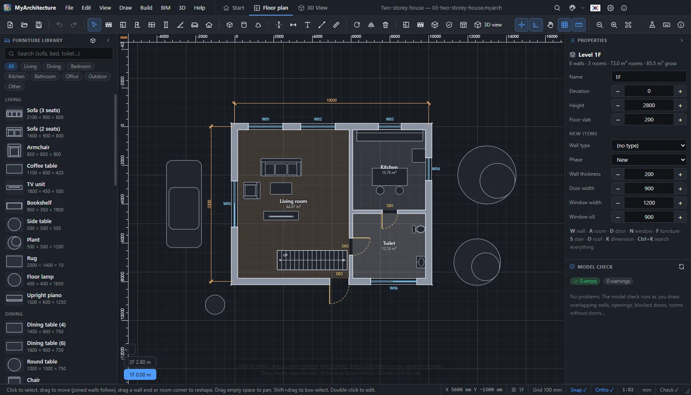
From top to bottom:
| Area | Contents |
|---|---|
| Title bar | Program icon, menus (File · Edit · View · Draw · Build · BIM · 3D · Help), right after them the view tabs (Start / Floor plan / 3D View), the document title, the magnifier button (command palette, Ctrl+K), and on the right the theme, language, settings and about buttons plus the window buttons |
| Toolbar | Tools for the current tab. It always starts with New project · Open · Save / Undo · Redo and ends with Tutorial · Keyboard shortcuts · About |
| Left panel | Floor plan: the furniture library and CAD layers / 3D: scenes, levels, display, section and phases, sun study |
| Centre | The start page, the plan drawing (with level tabs in the lower left) or the 3D view |
| Right panel | Floor plan: properties of the selected element and the model check list / 3D: information about the element you clicked |
| Status bar | The hint and page-specific cells, with the window resize grip at the far right |
Chapter 2 covers each area in detail.
1.4 The start page
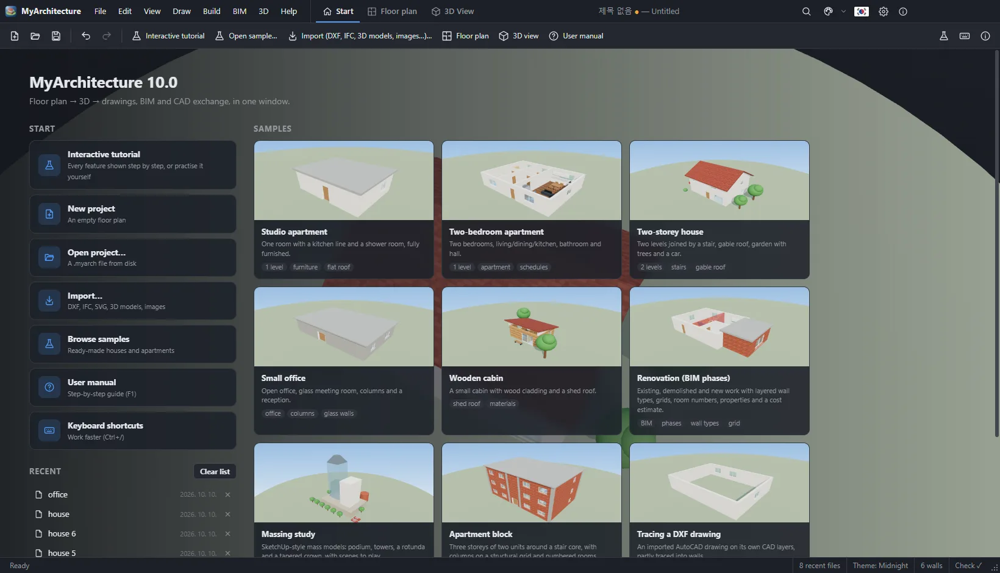
The program opens on the Start tab (if you set Settings → General → On start-up to Reopen the last project, the desktop edition opens the last file straight away). In the background the two-storey house sample turns slowly in 3D (turn off Settings → Appearance → Animations for a still image).
The Start cards on the left:
| Card | What it does |
|---|---|
| Interactive tutorial | Every feature shown step by step, or practise it yourself (chapter 9) |
| New project | An empty floor plan (Ctrl+N) |
| Open project… | A .myarch file from disk (Ctrl+O) |
| Import… | DXF, IFC, SVG, 3D models, images (Ctrl+I) |
| Browse samples | Ready-made houses and apartments (the sample list) |
| User manual | Step-by-step guide (F1) |
| Keyboard shortcuts | Work faster (Ctrl+/) |
Below them, the Recent list shows the files you opened or saved most recently, as many as Settings → General → Recent files to remember (10 by default, at most 30). Click an entry to open it; the × on the right (Remove from the list) removes only that entry from the list (the file stays on disk). Clear list empties the list. At the very bottom a Tip changes every day.
The Samples cards on the right first appear as plan drawings and change to 3D pictures a moment later. Click a card to open that sample.
On the Start tab the toolbar shows the text buttons Interactive tutorial · Open sample… · Import… · Floor plan · 3D view · User manual.
1.5 Samples
Open them with File → Open sample… or from the start page cards. Samples open from a read-only original, so to keep your changes use Save as (“Sample "…" opened. Save it under a new name to keep changes.”).
| # | Sample (file) | Contents | Shows these features |
|---|---|---|---|
| 1 | Studio apartment (01-studio.myarch) | One room with a kitchen line and a shower room, fully furnished | One level, the furniture library, a flat roof |
| 2 | Two-bedroom apartment (02-two-bedroom.myarch) | Two bedrooms, living/dining/kitchen, bathroom and hall | Rooms and areas, door and window tags, schedules |
| 3 | Two-storey house (03-two-storey-house.myarch) | Two levels joined by a stair, gable roof, garden with trees and a car | Levels, stairs, a gable roof, outdoor furniture. The showcase sample used as the start page background |
| 4 | Small office (04-small-office.myarch) | Open office, glass meeting room, columns and a reception | Columns, the glass wall material, office furniture |
| 5 | Wooden cabin (05-wooden-cabin.myarch) | A small cabin with wood cladding and a shed roof | A shed roof, materials (wood cladding) |
| 6 | Renovation (BIM phases) (06-renovation-bim.myarch) | Existing, demolished and new work with layered wall types, grids, room numbers, properties and a cost estimate | Phases and phase views, wall types, structural grids, BIM properties, the cost estimate |
| 7 | Massing study (07-massing-study.myarch) | SketchUp-style mass models: podium, towers, a rotunda and a tapered crown, with scenes to play | Mass boxes, cylinders and polygons, taper, groups, push/pull, scene playback |
| 8 | Apartment block (08-apartment-block.myarch) | Three storeys of two units around a stair core, with columns on a structural grid and numbered rooms | Several levels, grids and columns, room numbers, the ‘2F cut’ scene |
| 9 | Tracing a DXF drawing (09-cad-tracing.myarch) | An imported AutoCAD drawing on its own CAD layers, partly traced into walls | DXF import, showing and hiding CAD layers, tracing |
2. The window and controls
2.1 The title bar
From left to right the title bar holds the following. There is no separate tab row.
- Menus: File · Edit · View · Draw · Build · BIM · 3D · Help. With one menu open, moving the mouse over another menu name opens that menu at once.
- View tabs: Start · Floor plan (F2) · 3D View (F3). The Floor plan tab carries a badge with the model check result — the error count (red) if there are errors, or the warning count (yellow) if there are only warnings.
- Document title: the project title (the title in the project properties), a ● if there are unsaved changes, then the file name. The window title uses the same form,
● filename — MyArchitecture 10.0. - Magnifier button: opens the command palette (Ctrl+K). Its tooltip is “Search commands, rooms, furniture… (Ctrl+K)”. The search box itself is inside the palette (section 2.6).
- Buttons on the right: the palette icon (Random theme) + ▾ (the Choose a theme list), the flag (in the English interface the Korean flag switches to 한국어; in the Korean interface the British flag switches to English), the gear (Settings…) and ⓘ (About MyArchitecture).
Nothing in the title bar is ever hidden. The minimum window width is set so that every menu, tab and button fits, and on a very narrow screen the title bar wraps onto two lines.
2.2 The menus at a glance
| Menu | Items |
|---|---|
| File | New project, Open…, Open sample…, Recent files…, Clear recent files / Save, Save as… / Import (DXF, IFC, 3D models, images…)…, Import ▸, Export ▸ / Print / PDF…, Project properties… / Exit |
| Edit | Undo, Redo, Undo history… / Cut, Copy, Paste, Duplicate, Delete / Select all, Find… / Rotate 90°, Mirror horizontally / flip door, Mirror vertically, Scale…, Offset… / Group, Ungroup, Properties… |
| View | Start page, Floor plan, 3D view / Zoom in, Zoom out, Zoom to fit, Pan (hand) / Show grid, Show rulers, Snap to grid and walls, Orthogonal drawing (45° steps) / Show dimensions, Show furniture, Show room areas, Show the level below, Show underlays and CAD layers / Phases: show all, Phases: new design, Phases: existing building / Show library panel, Show properties panel / Themes…, Dark theme, Light theme, System theme / 한국어, English |
| Draw | Select, Wall, Room, Door, Window, Column, Stair, Furniture, Roof / Mass box, Mass cylinder, Mass shape / Grid line, Dimension, Text, Line, Measure |
| Build | Detect rooms from walls, Roof over the top level, Dimension the outside walls / Add level on top, Level properties…, Default sizes (walls, doors, windows)…, CAD layers… / Model check, Schedules and quantities… |
| BIM | Wall types…, BIM properties of the selection…, Select similar / Cost estimate…, Site location (sun study)… / Export IFC (BIM)…, Import IFC (BIM)… |
| 3D | 3D view / Isometric view, Top view, Front elevation / Walk through (first person), Section cut at the current level, Orthographic projection, Open doors, Fog / Push/Pull, Paint bucket, Tape measure / Add scene, Play scene animation / Save 3D image (PNG)…, Export 3D model (GLB, glTF, OBJ, STL, DAE, 3MF, USDZ, PLY)… |
| Help | Interactive tutorial, User manual, Keyboard shortcuts, Supported file formats…, Quick tour / Settings…, About MyArchitecture |
Items that switch on and off (show grid, snap, phase views, walk and so on) carry a ✓ when they are on, and items you cannot use right now are greyed out. Items with a shortcut show the key on the right.
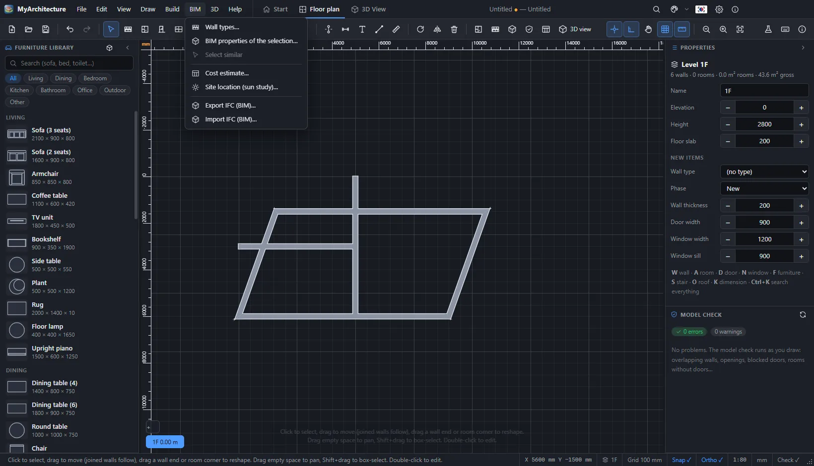
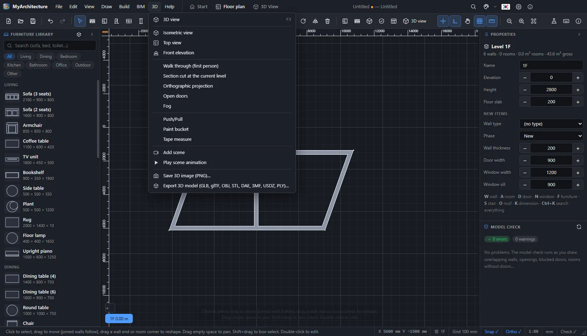
2.3 The toolbar
Hover over a button to see its name and shortcut in a tooltip. Active tools and options are highlighted.
- Always: New project · Open… · Save | Undo · Redo | … | (far right) Interactive tutorial · Keyboard shortcuts · About MyArchitecture
- The tooltips of the Undo/Redo buttons name the action as well (for example “Undo: Add wall (Ctrl+Z)”). When there is nothing to undo, the button is greyed out.
- Floor plan tab: Select · Wall · Room · Door · Window · Column · Stair · Furniture · Roof | Mass box · Mass cylinder · Mass shape | Grid line · Dimension · Text · Line · Measure | Rotate 90° · Mirror horizontally · Delete | Detect rooms from walls · Wall types… · BIM properties of the selection… · Model check · Schedules and quantities… · 3D view | (right) Snap · Ortho · Pan (hand) · Grid · Rulers | Zoom out · Zoom in · Zoom to fit
- 3D tab: see section 5.1.
- Start tab: see section 1.4.
Toolbar buttons are never hidden either. The minimum window width follows the widest toolbar seen so far; if the screen itself is narrow, text buttons shrink to icons (the tooltips stay), and if that is still not enough the toolbar wraps onto two lines.
2.4 Panels
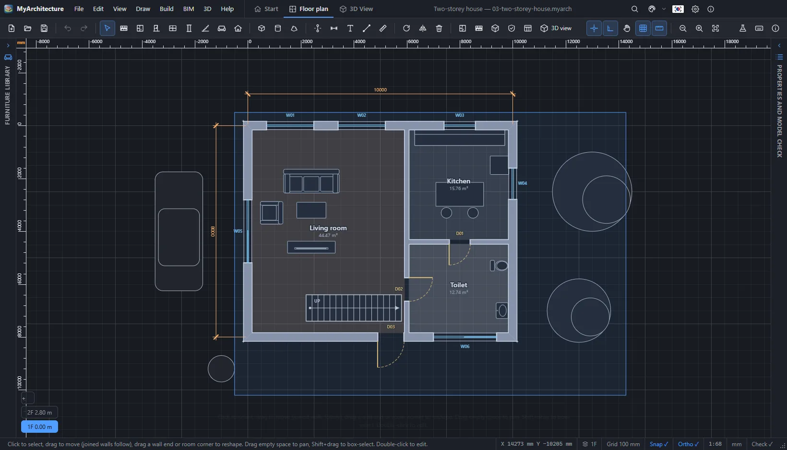
- The left panel (Ctrl+1, View → Show library panel) and the right panel (Ctrl+2, View → Show properties panel) also collapse with the < / > button in the panel title (Hide the panel).
- A collapsed panel does not disappear; it stays as a narrow strip with an icon and a vertical title (“Furniture library”, “3D view options”, “Properties and model check”, “Properties”). Click the strip to expand it again. The right strip carries a badge with the model check error and warning counts.
- Drag the border between a panel and the drawing to change its width between 200 and 520 px; the width is remembered for the next start.
- The Start tab has no side panels.
All numbers in the right panel (properties) are steppers: − on the left, + on the right, and you can type the value in the middle and press Enter. Holding a button repeats it, and the arrow keys in the value box change it one step at a time. Each value you change in the right panel is one undo step.
2.5 The status bar and window size
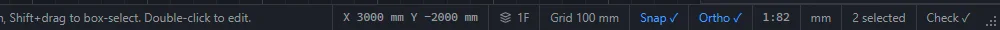
The wide cell at the far left shows the current tool's hint (“Ready” when there is none). The cells after it depend on the page you are on; cells that look like buttons can be clicked to change them.
| Page | Cells (left → right) |
|---|---|
| Floor plan | Cursor position X … Y … (in the current units, Y positive upwards) · Level (click for Level properties…) · Grid 100 mm (click to choose 10/25/50/100/250/500/1000 mm) · Snap ✓/— (click to toggle, F9) · Ortho ✓/— (click to toggle, F8) · screen scale 1:… (approximate, based on 96 dpi) · Units (click to cycle mm → cm → m → ft → mm) · n selected (when something is selected) · Check |
| 3D View | Navigation (Orbit/Pan/Walk — click to turn walking on or off) · Perspective/Orthographic (click to toggle) · Section ✓/— (click to toggle) · the display style name · n triangles · n selected · Check |
| Start | n recent files · Theme: … · n walls (or “Empty project”) · Check |
The Check cell shows Check ✓ (no problems), Check ⚠ n (warnings) or Check ✖ n (errors); clicking it runs the model check (F5) and switches to the floor plan.
Window resize grip: drag the dotted pattern in the lower-right corner of the status bar to resize the window (tooltip “Drag to resize the window”). It appears only in the desktop edition and is hidden while the window is maximised or full screen.
2.6 The command palette and Find
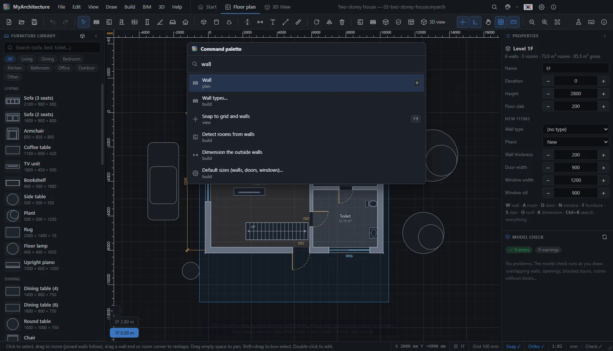
- Command palette (Ctrl+K or the magnifier in the title bar): finds every command, every room in the project (click to select that room in the plan and centre it) and every level (click to go to it) in one list. The list narrows as you type; run an entry with ↑/↓ and Enter, close with Esc. The theme and language commands at the end of the View menu (Themes…, Dark theme, Light theme, System theme, 한국어, English) can be run from here too.
- Find… (Ctrl+F, Edit menu): finds rooms, doors and windows (by tag), furniture, text and levels, and takes you there.
2.7 Zooming and panning (floor plan)
| Action | How |
|---|---|
| Zoom in/out | Mouse wheel (around the cursor), trackpad pinch (Ctrl+wheel), Ctrl+= / Ctrl+-, Zoom in / Zoom out on the toolbar. The step per wheel notch is set in Settings → Units & grid → Wheel zoom speed (× 0.5 to × 3) |
| Show everything | Home, Zoom to fit on the toolbar, the right-click menu on empty space |
| Pan | Left-drag on empty space (the default), middle-drag, right-drag, Space+drag, Shift+wheel (sideways), two-finger touch |
| Hand (pan) tool | View → Pan (hand) or the hand button on the toolbar. While it is on, a left-drag pans even over elements. Turn it off with Esc or the button |
Middle-drag, right-drag and Space+drag always pan, whatever tool you are using. Releasing the right button without moving opens the right-click menu.
If you set Settings → Units & grid → Left-drag on empty canvas to Box select, dragging empty space draws a selection box, and you pan with middle-, right- or Space-drag.
2.8 Grid and rulers
- Grid: by default Lines (5 × 5) — thin lines with a stronger line every 5 cells. Change the grid spacing (the snap spacing) in Settings → Units & grid → Grid, or with the grid cell in the status bar, to 10 / 25 / 50 / 100 / 250 / 500 / 1000 mm (100 mm by default). Grid style is Lines (5 × 5) or Dots. Turn it on and off with Show grid on the toolbar or in the View menu.
- Rulers: shown along the top and left edges of the drawing in the current units, with the cursor position marked in orange. Turn them on and off with Show rulers.
2.9 Selection
| Action | Result |
|---|---|
| Click | Selects one element. If it belongs to a group, the whole group is selected |
| Alt+click | Selects a single element inside a group |
| Shift+click or Ctrl+click | Adds to or removes from the selection |
| Shift+drag or Ctrl+drag | Box select (section 4.1) |
| Click on empty space | Clears the selection (Esc does the same) |
| Ctrl+A | Selects everything on the current level |
| Double-click | The properties window (section 4.10) |
Hovering over an element highlights it, and the cursor changes to the move cursor (✥). Over a handle (a wall end, a room or roof corner, a dimension or grid end) it becomes a crosshair.
Plan–3D cross-selection: selecting in the plan highlights the same element in blue in 3D, and clicking in 3D selects it in the plan. Turn this on and off with Settings → Floor plan → Cross-selection (“Selecting in the plan highlights it in 3D and back”).
2.10 Undo and redo
- Undo Ctrl+Z, Redo Ctrl+Y or Ctrl+Shift+Z. A short notice such as “Undo: Add wall” appears.
- The same commands are on the toolbar (with the step name in the tooltip), in the Edit menu, and at the top of the right-click menus of the plan drawing, the level tabs and the 3D view.
- One drag (moving, reshaping, push/pull) is one undo step. Up to 200 steps are remembered.
- Edit → Undo history…: click an entry in the list of past actions (newest at the top) to undo everything back to before that action in one go.
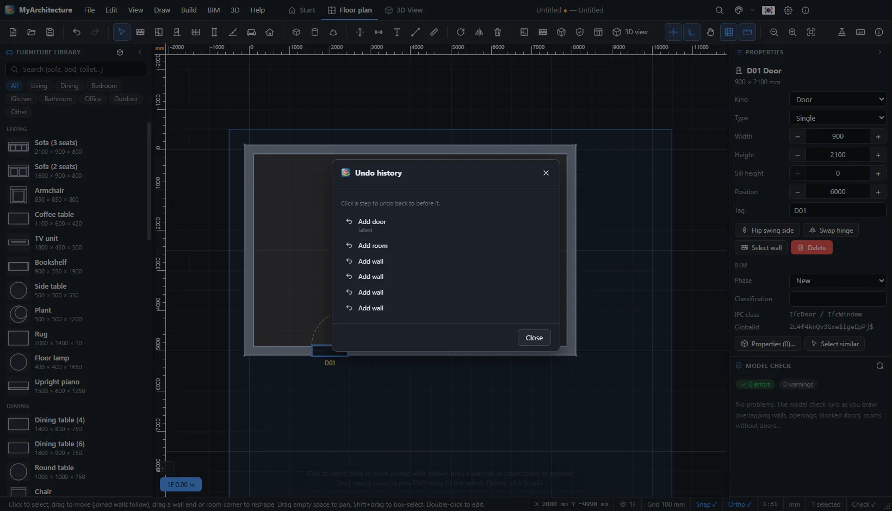
- While you are typing in an input box, Ctrl+Z undoes the typing in that box.
3. Drawing the plan
You draw on the Floor plan tab (F2). Press a tool key or pick a tool on the toolbar or in the Draw menu to switch tools; the status bar (and the bottom of the drawing) shows the tool's hint. Esc finishes what you are drawing, and pressing it again returns to the Select tool.
3.1 The tools
| Tool | Key | What it does |
|---|---|---|
| Select | Esc | Click to select, drag to move, drag handles to reshape |
| Wall | W | Click the corners in turn to draw walls |
| Room | A | Click inside walls → a room with its area |
| Door | D | Click on a wall |
| Window | N | Click on a wall |
| Column | C | Click to place |
| Stair | S | Two points: bottom, then top |
| Furniture | F | The furniture search window → click to place |
| Roof | O | Click inside the building → a roof over the outline |
| Mass box | B | Two opposite corners |
| Mass cylinder | U | The centre, then a point on the circle |
| Mass shape | — | Click the corners in turn |
| Grid line | G | The two ends of a structural grid line |
| Dimension | K | Two points → offset → click |
| Text | T | Click and type |
| Line | L | A drafting line on a CAD layer |
| Measure | M | The distance between two points (nothing is left in the drawing) |
3.2 Snapping and ortho
While you draw, the cursor marker shows what it has snapped to.
| Marker | Meaning |
|---|---|
| Orange square | A wall end, a corner of a room or CAD line, a column centre |
| Green triangle | On a wall centre line (in grid steps along the wall) |
| Cross | A grid point or a point along the ortho direction |
| Orange dashed line | Lined up horizontally or vertically with another wall end (alignment guide) |
- Snap (F9, View → Snap to grid and walls, status bar): snaps to ends and corners → walls → the grid, in that order. When it is off the cursor position is used as is.
- Ortho (F8, View → Orthogonal drawing (45° steps)): when drawing walls, lines, rooms, roofs and stairs, the direction is held to 45° steps and the length to grid steps. If that direction meets another wall's centre line, the wall ends exactly on it.
- Hold Shift while drawing for a free angle at that moment.
3.3 Walls
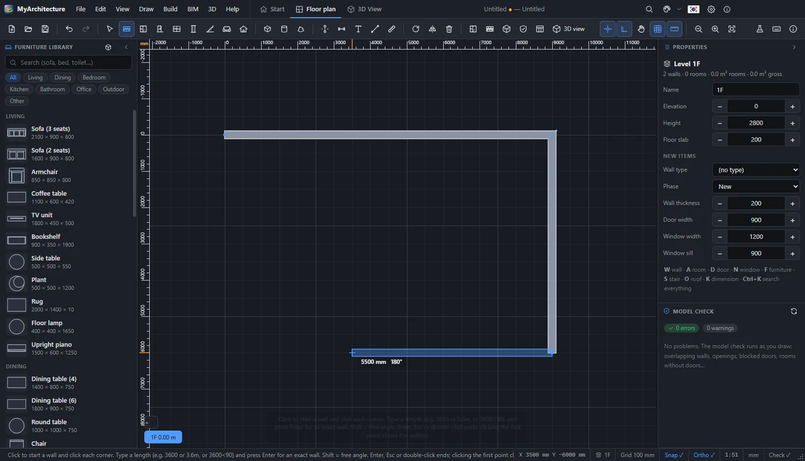
- Press W and click the start point.
- Click at every corner. Next to the cursor you see the current wall's length and angle (counter-clockwise on screen, 0° = to the right), and a blue preview of the wall thickness follows the cursor.
- To finish: Enter, Esc, a double-click, clicking the same point again, or clicking the first point (which closes the outline and finishes). A right-click also finishes drawing.
- Backspace while drawing undoes the last corner (wall).
When you finish, the walls you just drew are selected and you are told “n walls drawn. Press A and click inside them to make a room.”
New walls take their thickness, material, wall type and phase from:
- The New items section of the right panel (when nothing is selected): wall type, phase, wall thickness (and door width, window width and window sill).
- The wall thickness and wall material in Build → Default sizes (walls, doors, windows)….
- When a wall type is chosen, the thickness is the sum of that type's layer thicknesses.
- Unless you set it, a new wall's height follows the level height.
Typing a length
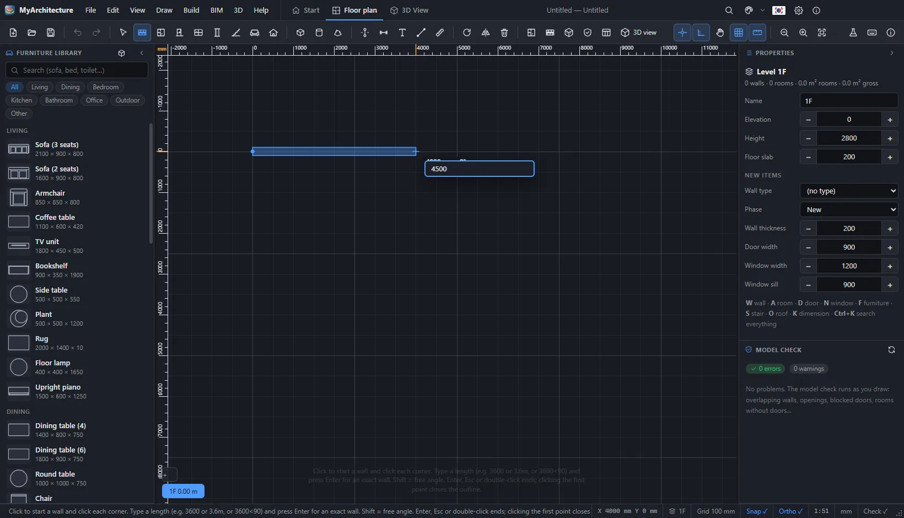
While drawing a wall (or line), typing a digit or . opens a length box next to the cursor (“Length (mm, 3.6m, 3600<90)”). Type a value and press <kbd>Enter: a wall of exactly that length is placed in the current cursor direction, and drawing continues.
| Input | Meaning |
|---|---|
3600 | 3600 mm (mm when no unit is given) |
3.6m | 3.6 m = 3600 mm |
360cm | 360 cm |
3600mm | 3600 mm |
120in, 120" | 120 inches |
12'6", 12'6, 12' | 12 feet 6 inches / 12 feet |
3600<90 | Length 3600 at an angle of 90° (counter-clockwise on screen: 0° right, 90° up, 180° left, 270° down) |
3,6m | A comma is read as a decimal point too |
Without an angle, the wall goes in the direction the cursor is pointing (rounded to 45° steps when ortho is on).
Wall joints
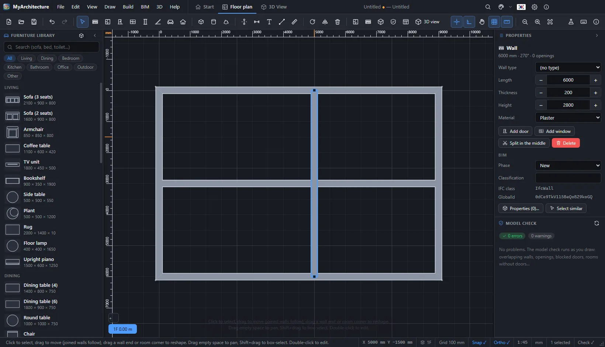
When a wall end touches another wall's end or centre line, L, T and cross joints are drawn cleanly by themselves (there is no need to trim or join walls). For a partition, just put its end on the outside wall.
Editing walls
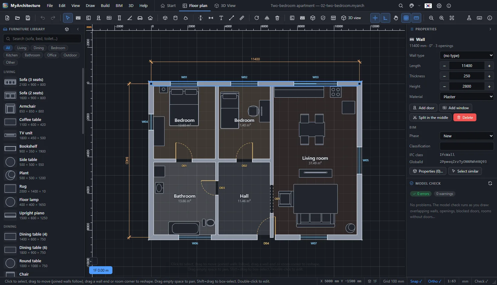
When a wall is selected, the right panel title shows its length · angle · number of openings, followed by these fields:
| Field | Description |
|---|---|
| Wall type | (no type) or one of the wall types. Choosing one sets the thickness to the sum of its layers |
| Length | Changing it moves the end point, and walls joined at that end follow |
| Thickness | Changing it directly releases the wall type |
| Height | When equal to the level height, it follows the level height (and changes with it) |
| Material | The wall material (section 12.3) |
Buttons: Add door, Add window (press, then click on the wall), Split in the middle, Delete. Below them is the BIM section (chapter 6).
- Drag a wall's end handle (the small square) to move only that end. Drag the wall's body to move the whole wall; joined walls stretch and follow (Alt+drag moves it without stretching joined walls).
- The right-click menu on a wall: Add door here, Add window here, Split wall here, Merge straight walls (merges walls that continue in a straight line on the current level into one).
- Double-click (or E) for the Wall properties window: length, thickness, height (+ Same as the level height), material.
3.4 Rooms
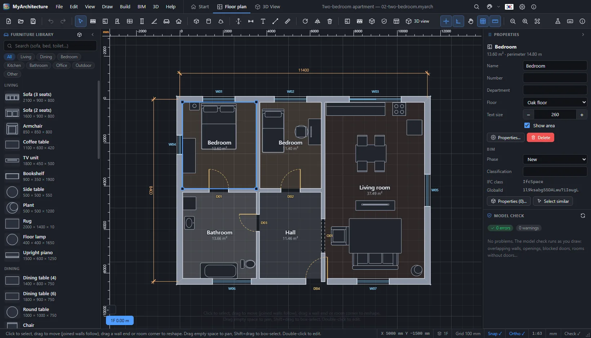
- Press A and click inside closed walls: a room is created along the inner faces of the walls. A name is given automatically to suit its size (Living room, Bedroom, Bathroom …), and the area is shown in a notice (“Room "…" added: … m². Double-click to rename it.”).
- Start with Shift+click to draw the corners yourself. Finish by clicking the first point again or with Enter. The area is shown next to the cursor while you draw.
- Build → Detect rooms from walls (right-click on empty space → Detect rooms): turns every closed space on the current level that has no room yet into a room.
- The floor material is Oak floor by default (change it with the floor material in the Default sizes window).
When a room is selected, the right panel shows its area and perimeter and has the fields Name, Number (room number), Department (use), Floor (material), Text size and Show area. Drag the corner handles to reshape it (when only one room is selected). Double-click for the Room properties window (pick the name from Living room, Bedroom, Kitchen, Dining room, Bathroom, Toilet, Hall, Entrance, Study, Utility room, Storage, Dressing room, Balcony, Garage, Office, Meeting room, Corridor, Stairs, or type your own).
3.5 Doors and windows
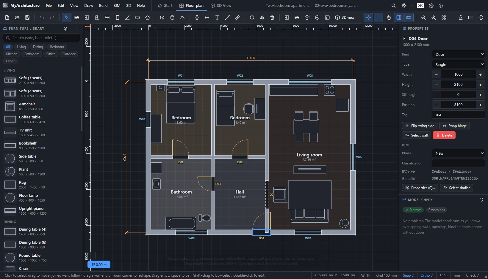
- Press D (door) or N (window) and move the cursor over a wall: a preview and its width appear. Click to insert it.
- The position snaps along the wall in half grid steps and is kept from running past the wall ends.
- A door opens towards the side the cursor is on, and the hinge goes at the end nearer to where you clicked.
- If the wall is too short you see “This wall is too short for it.”; if there is already a door or window there, “There is already a door or window there.”
- Sizes and types of new doors and windows: the Default sizes window (initial values: door width 900, door height 2100, window width 1200, window height 1200, sill 900) and the New items section of the right panel.
With a door or window selected:
| Key / button | What it does |
|---|---|
| X / Flip swing side | Changes the side of the wall the door opens to |
| H / Swap hinge | Moves the hinge to the other end |
| Select wall | Selects the wall this door or window sits in |
Fields in the right panel: Kind (Door / Window / Opening), Type (doors: Single, Double, Sliding, Garage; windows: Casement, Fixed, Sliding), Width, Height, Sill height, Position (distance from the wall start to the centre), Tag. If you leave the tag empty, doors get D01, D02…, windows W01… and openings O01… automatically, in order of level and position. Double-click for the Door properties / Window properties window (the fields above plus swing side “Left of the wall/Right of the wall” and hinge “At the wall start/At the wall end”).
Doors and windows belong to their wall, so they move with it when you move or stretch the wall. Deleting a wall deletes its doors and windows too.
3.6 Furniture
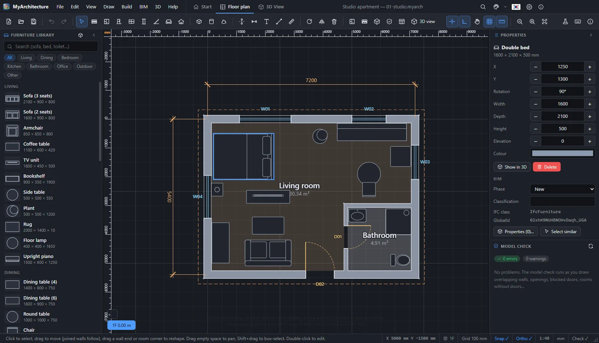
The Furniture library (left panel):
- A search box at the top (“Search (sofa, bed, toilet…)”) and category chips: All · Living · Dining · Bedroom · Kitchen · Bathroom · Office · Outdoor · Other. Pressing Enter in the search box picks the first item.
- With no search text and no category, Recently used furniture (up to 10) is shown at the top.
- Each item shows its plan symbol and
width × depth × height. - Click an item, then click in the drawing, or drag an item onto the drawing to place it.
- Imported 3D models (section 7.4) appear below the list and are placed the same way. The 3D model button in the panel title is Import 3D model (OBJ, FBX, GLB, STL…)….
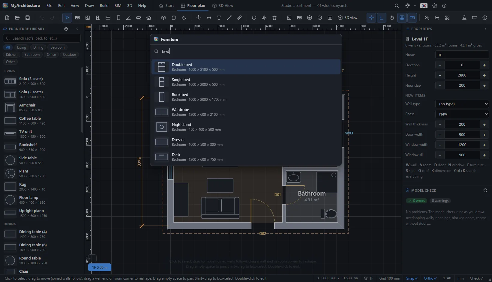
F (furniture search): in the “Furniture — type a name (sofa, bed, sink, car …)” window type a name and press Enter → click in the drawing. Recently used furniture is listed first.
While placing:
| Key | What it does |
|---|---|
| R | Rotates the preview by 90° |
| Shift+R | Rotates by 15° |
| Shift+click | Keeps placing the same piece after this one |
| Esc | Stops placing |
Furniture is placed and moved in half grid steps (hold Shift while dragging to move only horizontally or vertically). When selected, the right panel has X, Y, Rotation, Width, Depth, Height, Elevation (height above the floor) and Colour and a Show in 3D button. Double-clicking also lets you change the name and the kind (swap it for another piece of furniture). The full list is in section 12.4.
3.7 Stairs
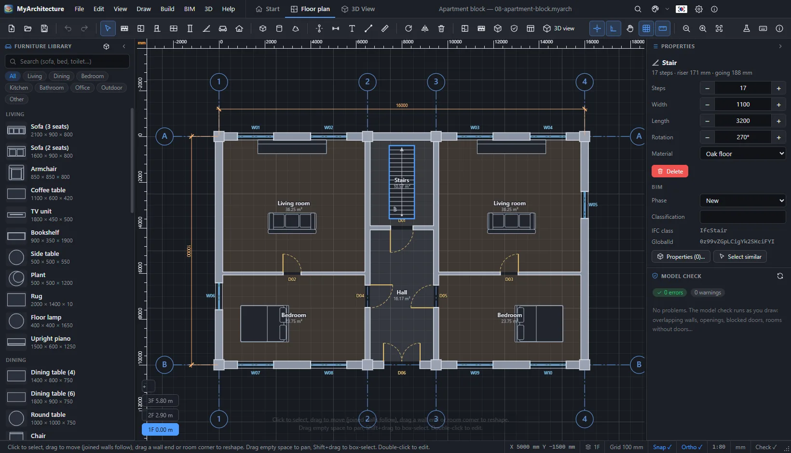
- Press S, click the bottom of the stair, then the top (in 45° steps when ortho is on). Nothing is created if it is shorter than 600 mm.
- The number of steps is set automatically by dividing the level height (+ slab) by about 175 mm (at least 3 steps). The width is the stair width from the default sizes (1000 mm initially).
- When selected, the title shows “n steps · riser … mm · going … mm”, with the fields Steps, Width, Length, Rotation, Material. If the riser exceeds 200 mm you see the warning “Risers over 200 mm are steep: add steps.”
- In the plan an arrow shows the direction of travel with the word “UP”; in 3D the stair is built with treads.
3.8 Columns
- Press C and click. Columns snap readily to wall ends (corners). Press R before placing to rotate.
- The size is the project default, 400 × 400 mm. When selected: Shape (Rectangular/Round), Width, Depth, Rotation, Material. The height follows the level height.
3.9 Roofs
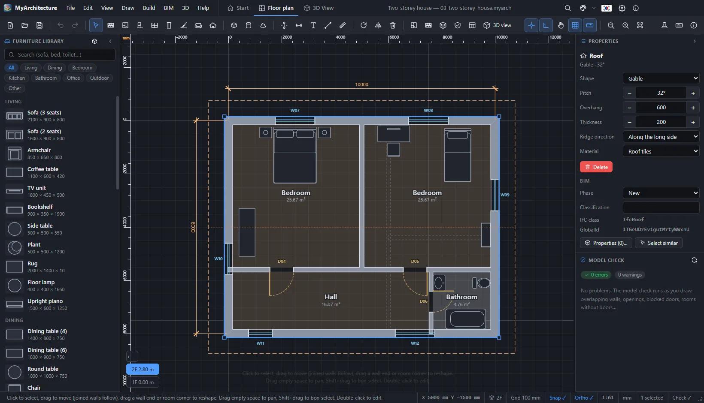
Three ways to make a roof:
- Build → Roof over the top level: puts a roof over every closed outline of outside walls on the top level (the shape comes from Settings → Floor plan → New roofs; gable by default, 30° pitch, 500 overhang). Running it again replaces the roofs it made before. If there is no closed outline: “The top level has no closed outline of walls.”
- Press O and click inside the building: a roof over that level's outside wall outline (400 overhang).
- Press O, then Shift+click to draw the roof outline yourself (finish with Enter).
The roof sits on top of that level's walls. In the plan it is drawn dashed (Settings → Floor plan → Roofs (dashed)).
When selected: Shape (Gable / Hip / Shed / Flat), Pitch (0 to 75°), Overhang, Thickness, Ridge direction (Along the long side / Across), Material (Roof tiles, Slate, Metal roof, Concrete). Reshape it with the corner handles.
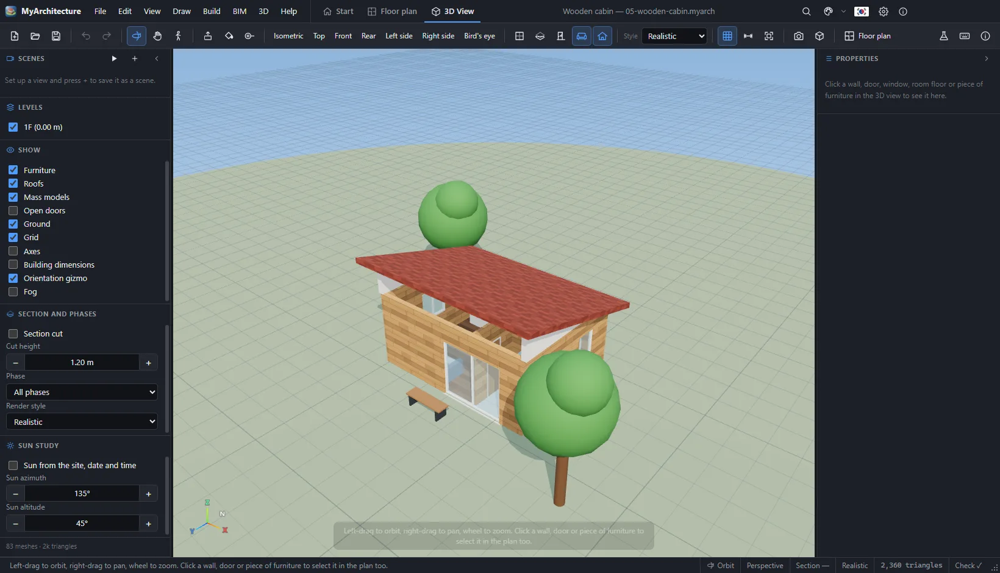
3.10 Levels
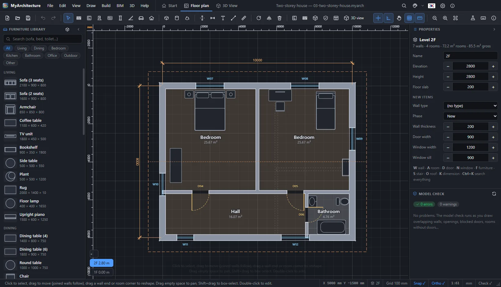
The level tabs in the lower left of the drawing are stacked from the lowest level upwards (name and floor elevation, such as 1F 0.00 m).
| Action | Result |
|---|---|
| Click a tab | Edit that level. You can only draw on the current level |
| Double-click a tab | Rename it |
| The + tab | Adds a level on top — copying the walls and windows of the top level (doors are not copied) |
| Right-click a tab | Undo · Redo / Rename level… · Level properties… · Duplicate level (walls, doors, windows) / Delete level |
- Build → Add level on top is the same as the + tab. New levels are named
2F,3F…, and the floor elevation is the level below plus its storey height. - Duplicate level (walls, doors, windows) copies that level's walls, doors, windows and rooms into a new level on top.
- Delete level deletes that level and everything on it (it asks first; you cannot delete the only level).
- Level properties… (Build menu, the level cell in the status bar): name, elevation, height (storey height, at least 1000), floor slab. “Walls without their own height use the level height. Moving a level up or down moves everything on it in 3D.” The same fields appear in the right panel when nothing is selected, together with a level summary (number of walls and rooms, room area, gross area).
- The level below is shown faintly underneath (View → Show the level below).
- Structural grid lines are shared by all levels.
3.11 Dimensions, text, lines and measuring
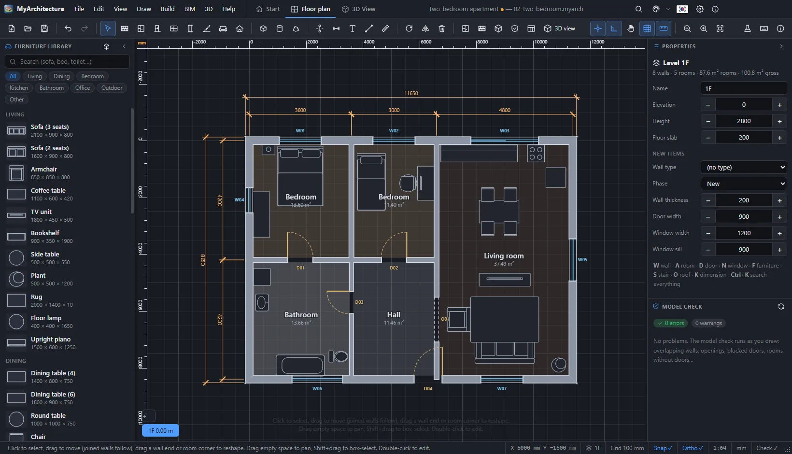
- Dimension K: click two points, move the mouse to place the dimension line (the offset, in 50 mm steps) and click once more. Points snap to wall ends and walls. When selected: Offset and Text override (text to show instead of the number); move the points with the end handles.
- Build → Dimension the outside walls (right-click on empty space → Auto dimensions): adds the overall width and depth of the building on the current level and a string of dimensions between walls on the outside. Running it again replaces the earlier automatic dimensions.
- Text T: an input box opens where you click. Confirm with Enter. When selected: the text (multi-line), Size, Rotation, Align (Left/Centre/Right).
- Line L: a drafting line (polyline) on a CAD layer. Click the points in turn and finish with Enter or a double-click; clicking the first point closes it. It is drawn on the layer you clicked in the CAD layer list on the left (the highlighted row) and is exported to DXF. When selected: Layer, Colour.
- Measure M: click two points for a “Distance: … (… m)” notice. Nothing is left in the drawing. A third click starts a new measurement; Esc clears it.
Use View → Show dimensions to hide dimensions (printing has its own option).
3.12 Structural grids
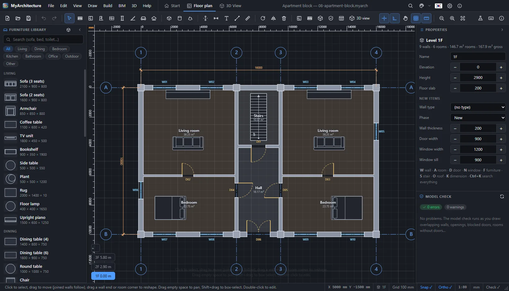
- Press G (right-click on empty space → Grid line) and click the two ends of a grid line (at least 500 mm).
- Vertical lines get the next free number
1, 2, 3 …and horizontal lines the next free letterA, B, C …(after 26,A1, A2…), with bubbles drawn at both ends. They appear on every level. - When selected you can change the Label, and adjust the length with the end handles. They are exported to IFC as
IfcGrid.
3.13 Masses (SketchUp-style massing)
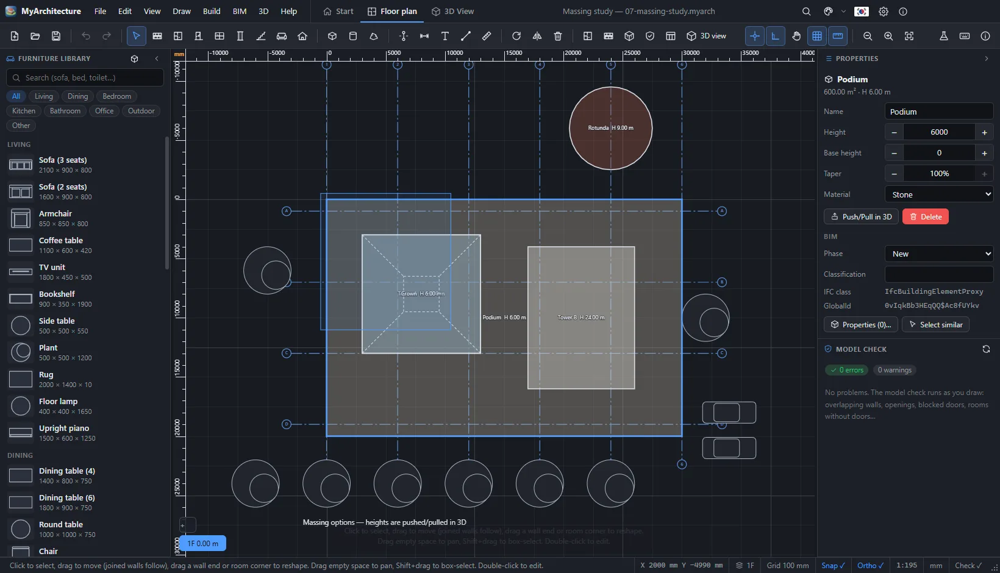
Use masses to study volumes as solid blocks without walls or floors.
| Tool | How to draw |
|---|---|
| Mass box B | Click two opposite corners |
| Mass cylinder U | Click the centre, then a point on the circle (a 32-sided polygon) |
| Mass shape | Click the corners in turn; Enter or clicking the first point extrudes it |
New masses are 3000 mm high, made of concrete, in the New phase. When selected:
| Field | Description |
|---|---|
| Name | The mass's name |
| Height | The mass's height |
| Base height | Height above the level floor (a tower on a podium and so on) |
| Taper | Size of the top face, 0 to 100%. 100% = vertical, 0% = pyramid/cone |
| Material | The wall and roof material |
The Push/Pull in 3D button switches to the 3D tab and turns on the Push/Pull tool (section 5.9). Masses can also be moved, rotated, mirrored, scaled, offset and grouped.
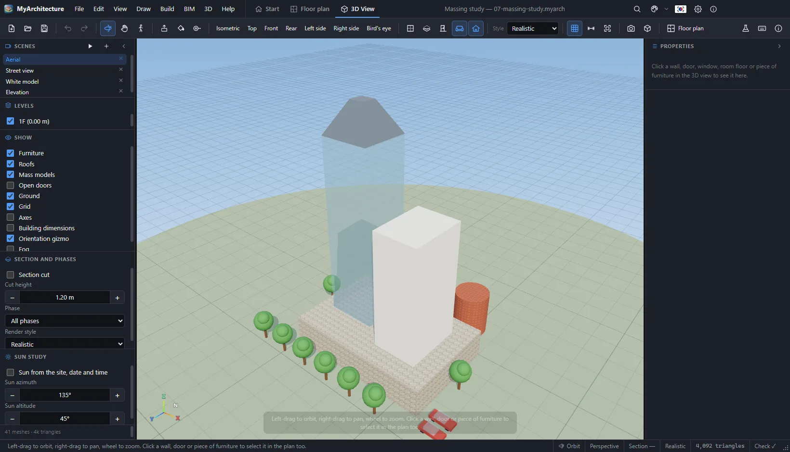
3.14 Image underlays and tracing CAD drawings
- Import a scanned plan as an image underlay (section 7.4) and draw walls over it. A selected underlay has the fields X, Y, Width, Rotation, Opacity and a tip (“Tip: measure a known length on the image with M, then set the width so it matches.”).
- DXF/SVG drawings come in as CAD layers (section 7.4). Trace walls over them with W, then hide the layers.
- View → Show underlays and CAD layers shows or hides both at once.
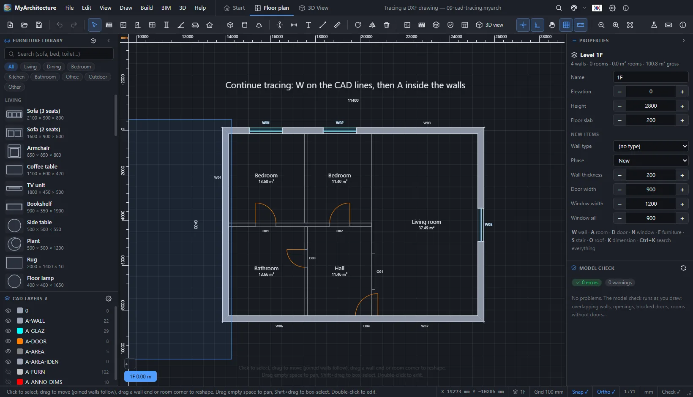
CAD layer list (left panel, shown when there is a drawing or more than one layer): an eye icon to show or hide, a colour swatch, the name and the number of items. Click a row to make that layer the layer the Line tool draws on. The gear (or Build → CAD layers…) opens the layers window.
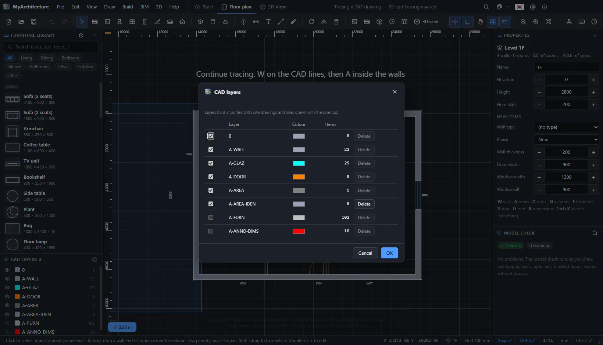
The CAD layers window: per layer a visibility tick, colour, item count and Delete (only for layers with no items; layer 0 cannot be deleted). It is split into pages of 10.
4. Editing
Most editing commands work on the Floor plan tab.
4.1 Box select
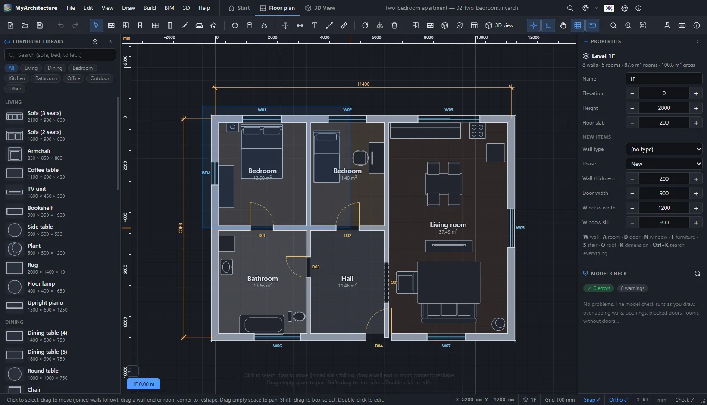
Shift+drag (or Ctrl+drag, or a plain drag depending on the settings):
- Left → right (solid blue box): only what lies completely inside the box (window selection).
- Right → left (dashed green box): also anything the box touches (crossing selection).
- A box selection is added to the current selection.
4.2 Moving
- Drag the selection to move it. The distance snaps to grid steps (half steps for furniture); hold Shift to move only horizontally or vertically.
- When you move a wall, joined walls stretch and follow, and its doors and windows stay in the wall. Alt+drag does not stretch joined walls.
- Arrow keys: one grid step; Shift+arrow keys: ten steps.
- Dragging a handle does not move but reshapes (wall ends, room and roof corners, dimension and grid ends).
4.3 Copy, cut, paste, duplicate, delete
| Command | Key | Description |
|---|---|---|
| Copy | Ctrl+C | “Copied n items” |
| Cut | Ctrl+X | Copy, then delete |
| Paste | Ctrl+V | Pastes at the cursor (snapped to the grid). If the cursor is outside the drawing, 1 m away from the original place. Goes onto the current level (handy for copying to another level) |
| Duplicate | Ctrl+D | A copy 1 m to the lower right |
| Delete | Del or Backspace | Deleting a wall deletes its doors and windows too |
Paste in the right-click menu on empty space pastes where you right-clicked.
4.4 Rotating and mirroring
| Command | Key | Description |
|---|---|---|
| Rotate 90° | R | 90° around the centre of the selection |
| Rotate 15° | Shift+R | 15° in the opposite direction |
| Mirror horizontally / flip door | X | If the selection contains doors or windows, only flips the doors' swing side; otherwise mirrors left–right |
| Mirror vertically | Y | Mirrors top–bottom |
| Swap hinge | H | The hinge of the selected door |
4.5 Scale
Edit → Scale… (with several items selected, the Scale… button in the right panel): enter a “Scale factor (e.g. 1.5 or 50%)” to enlarge or shrink the selection around its centre. Percentages such as 50% work too. Furniture is scaled in height as well.
4.6 Offset
Edit → Offset…: enter an “Offset distance in mm (negative = inwards)” to make a parallel copy of the selected room, mass, roof or closed line. Positive values go outwards, negative inwards. It does not work on other elements (“Select a room, mass, roof or closed line to offset.”).
4.7 Groups
- Group Ctrl+G: binds two or more selected items together (doors, windows and grid lines do not go into groups). Afterwards clicking any of them selects the whole group, and they move together. Alt+click picks just one.
- Ungroup Ctrl+Shift+G.
- When you select a grouped element, the right panel shows “Part of a group (n items)…” and an Ungroup button.
4.8 When several items are selected
The right panel shows “n items selected”, a count per kind and the buttons Rotate · Mirror · Duplicate · Delete · Group · Scale…. If only walls are selected, you can change their Thickness and Material all at once.
4.9 Select similar
BIM → Select similar (right-click menu, button in the BIM section): selects everything on the current level that matches the first selected element.
- Walls: the same wall type and the same thickness
- Furniture: the same kind
- Doors and windows: the same kind and the same width
- Anything else: everything of the same kind (all grid lines for a grid line)
4.10 The properties window
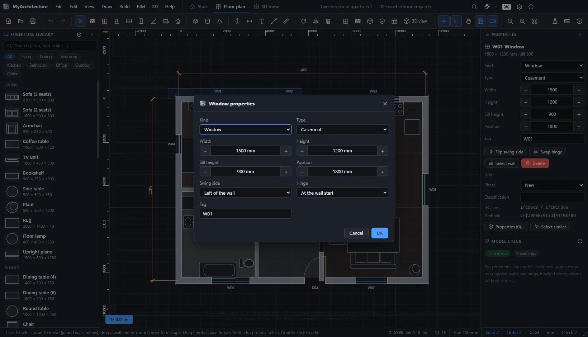
With the Select tool, double-click an element, or select one and press E (Edit → Properties…), to open its properties window. Changes in the window are applied all at once (as one undo step) when you press OK. Running Properties… with nothing selected opens the project properties.
| Element | Window | Fields |
|---|---|---|
| Wall | Wall properties | Length, Thickness, Height, Same as the level height, Material |
| Door / window | Door properties / Window properties | Kind, Type, Width, Height, Sill height, Position, Swing side, Hinge, Tag |
| Room | Room properties | Name (list), Floor, Area (read-only), Text size, Show area |
| Furniture | (the furniture's name) | Name, Kind, Width, Depth, Height, Elevation, Rotation, Colour |
| Stair | Stair properties | Steps, Width, Length, Rotation, Material |
| Roof | Roof properties | Shape, Pitch, Overhang, Thickness, Material |
| Column | Column properties | Shape, Width, Depth, Rotation |
| Text | Text | Text, Size, Rotation |
| Others (masses, dimensions, grids, lines, underlays) | — | “Edit it on the right.” — edit them in the right panel |
4.11 The right-click menu (plan)
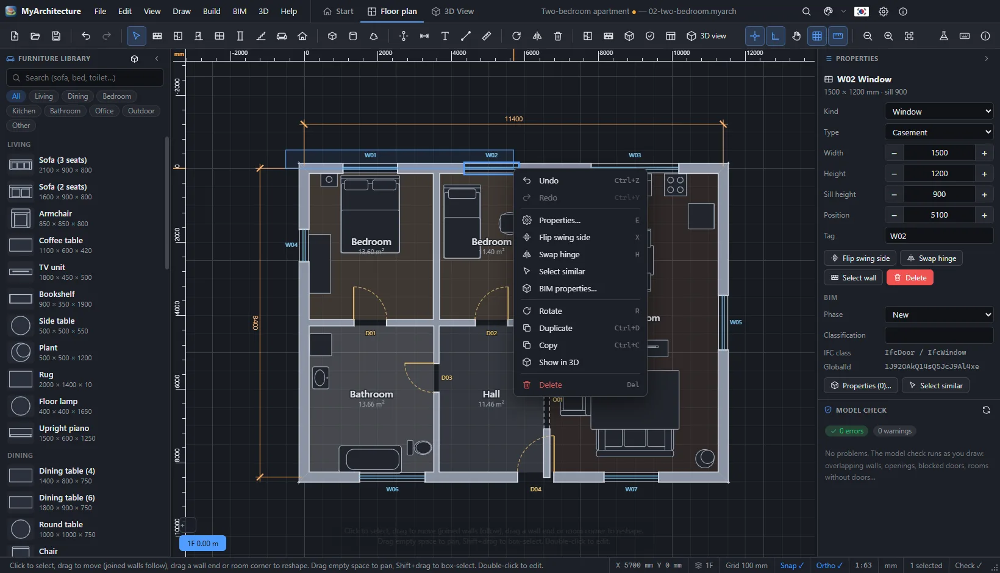
With the Select tool, a right-click without moving the mouse opens the menu. (While drawing, a right-click finishes the drawing; with other tools it returns to the Select tool.)
On an element (the element becomes selected):
- Undo · Redo
- Properties… (E)
- For walls: Add door here · Add window here · Split wall here · Merge straight walls
- For doors and windows: Flip swing side (X) · Swap hinge (H)
- Select similar · BIM properties…
- Rotate (R) · Duplicate (Ctrl+D) · Copy (Ctrl+C) · Show in 3D
- Delete (Del)
On empty space: Undo · Redo / Paste · Detect rooms · Auto dimensions · Select all · Grid line / Zoom to fit.
Level tabs: section 3.10. 3D: section 5.14.
5. The 3D view
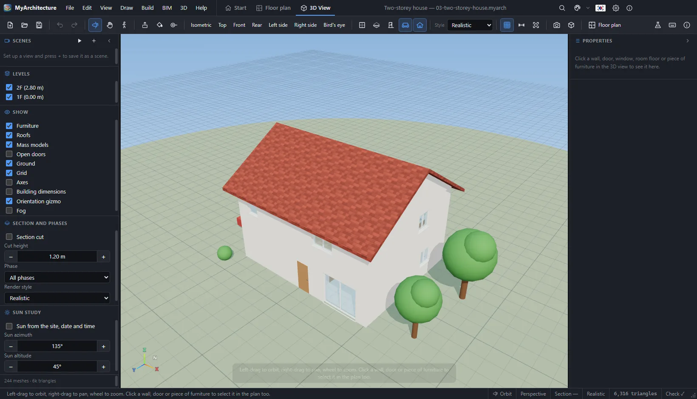
The 3D View tab (F3; F4 does the same) shows what you drew in the plan as a 3D building straight away. When you change the plan, the 3D model is rebuilt shortly after. The first time it opens, it fits the whole building in an isometric view.
5.1 The 3D toolbar
| Group | Buttons |
|---|---|
| Navigation | Orbit · Pan (P) · Walk (V) |
| Tools | Push/Pull · Paint bucket · Tape measure |
| Views | Isometric · Top · Front · Rear · Left side · Right side · Bird's eye (keys 1 to 7) |
| Display | Orthographic projection (O) · Section cut at the current level (X) · Open doors · Furniture · Roofs |
| Style | The render style list (Realistic / White model / Line drawing / X-ray) |
| Aids | Grid (G) · Building dimensions · Zoom to fit |
| Output | Save 3D image (PNG)… · Export 3D model… |
| Go to | Floor plan |
5.2 Navigation (orbit · pan)
| Action | Orbit (default) | Pan mode (P) |
|---|---|---|
| Left-drag | Rotate | Pan |
| Right-drag | Pan | Rotate |
| Wheel / middle-drag | Zoom | Zoom |
- Arrow keys: rotate (7.5° per press); Shift+arrow keys: pan.
- Double-click the model to move in closer around that point.
- Home (Zoom to fit) fits the whole building while keeping the current direction.
- Rotation speed and field of view are in Settings → 3D view.
- The orientation gizmo in the upper-right corner (X red, Y blue, Z green) shows the current direction (display option Orientation gizmo).
5.3 Views
1 Isometric · 2 Top · 3 Front · 4 Rear · 5 Left side · 6 Right side · 7 Bird's eye. The camera flies smoothly there and fits the whole building. The 3D menu has Isometric view, Top view and Front elevation.
5.4 Walking (first person)
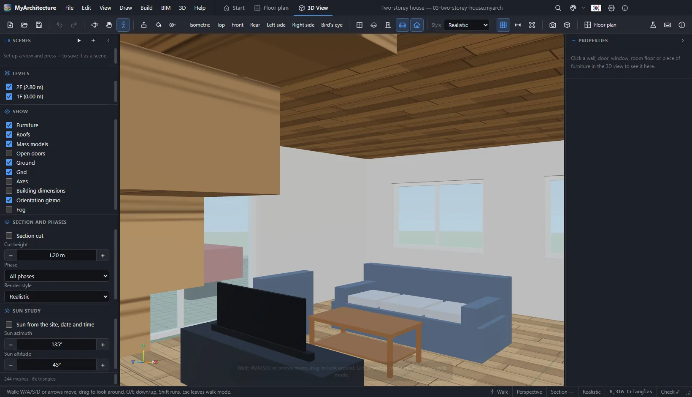
Press V (or the Walk button, 3D → Walk through (first person), the navigation cell in the status bar) to stand on the floor of the lowest visible level with an eye height of 1.6 m.
| Key / action | What it does |
|---|---|
| W / ↑ | Forward |
| S / ↓ | Back |
| A / D | Step left / right |
| ← / → | Turn left / right |
| E / Page Up | Rise |
| Q / Page Down | Sink |
| Hold Shift | Run (about 3 times faster) |
| Drag | Look around |
| Wheel | One step (0.5 m) forward or back |
| Esc or V | Stop walking |
Walking works only in perspective (an orthographic view switches to perspective automatically). Pressing a view button or going to another tab ends walking.
5.5 Orthographic projection and elevations
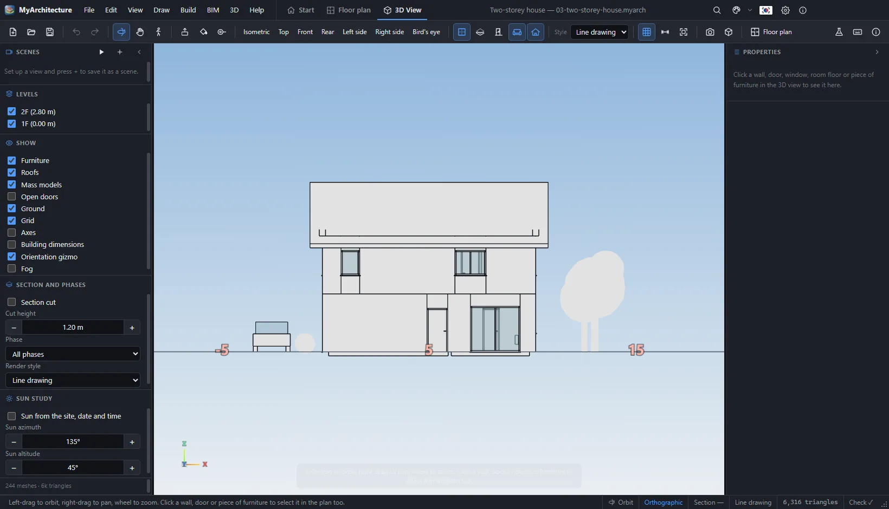
- O (Orthographic projection) shows the model in parallel projection without perspective. The status bar shows “Orthographic / Perspective”.
- 3D → Front elevation turns on orthographic projection + the Line drawing style + the front view in one go, so the model looks like an elevation drawing. From there use 4 to 6 for the other elevations.
5.6 Display styles
Choose one from the Style list on the toolbar or Render style in the Section and phases panel on the left.
| Style | Look |
|---|---|
| Realistic | Material colours and patterns, sun and shadows |
| White model | Everything white like a physical model, with shadows |
| Line drawing | White faces + black edges (like an elevation or sketch), no shadows |
| X-ray | Translucent blue faces to see inside |
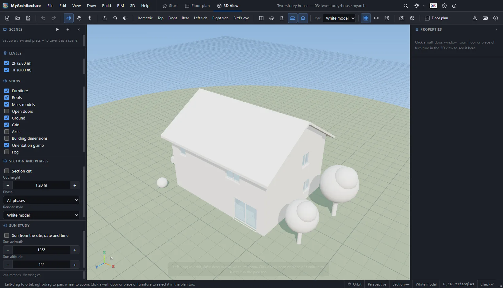
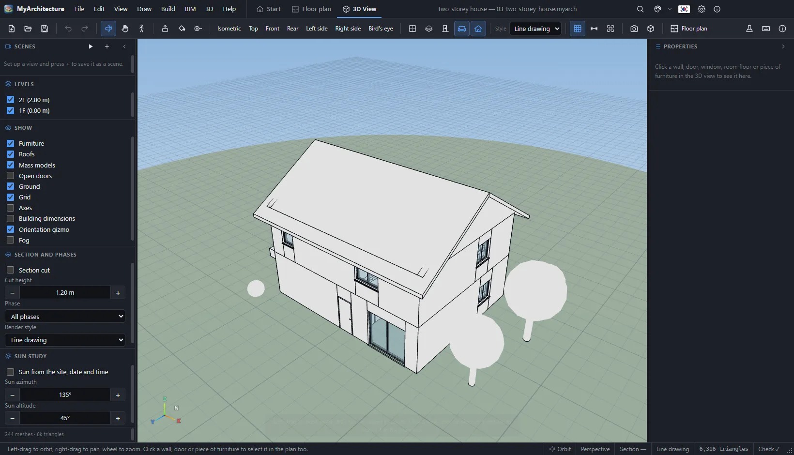
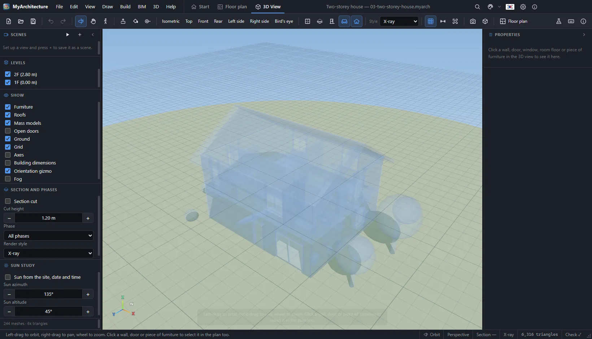
5.7 Section cut
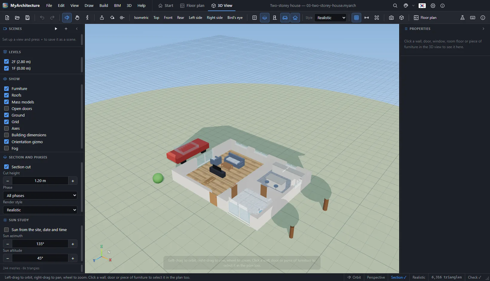
- X (the section button, 3D → Section cut at the current level, the section cell in the status bar) cuts the building horizontally at the floor of the level you are editing in the plan + 1.2 m and removes everything above. The interior shows like a 3D floor plan. Press it again to turn it off.
- In the Section and phases panel on the left: tick Section, and change the height with the Cut height stepper (0.1 m steps).
- Parts that have been cut away cannot be selected by clicking.
5.8 The left panel (3D view options)
From the top:
- The Paint bucket palette (only while the Paint bucket tool is on, section 5.10)
- Scenes (section 5.13)
- Levels: a tick for each level (top level first). Unticking a level hides it in 3D (and leaves it out of exports).
- Show: Furniture · Roofs · Mass models · Open doors · Ground · Grid · Axes · Building dimensions · Orientation gizmo · Fog
- Section and phases: Section, Cut height, Phase (All phases / New design (no demolition) / Existing (before works)), Render style
- Sun study (section 5.12)
- At the bottom: the number of meshes · triangles
The display options:
| Option | Description |
|---|---|
| Open doors | Shows door leaves open (handy for walking through) |
| Ground | A ground plane under the building |
| Grid (G) | See 5.8.1 |
| Axes | The X (red), Y (blue) and Z (green) axes at the origin |
| Building dimensions | The overall W (width), D (depth) and H (height) of the building as yellow dimensions |
| Fog | Aerial perspective that fades with distance (same as Fog in the 3D menu) |
5.8.1 The 3D grid
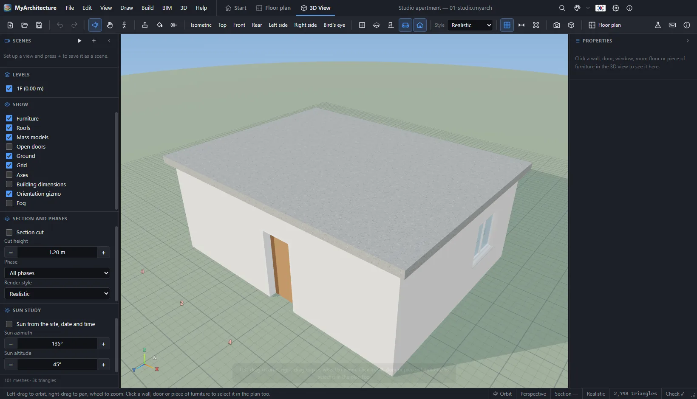
The 3D grid is drawn like the plan grid.
- Thin lines one cell apart and a stronger line every 5 cells (5 × 5 blocks).
- As you zoom, the cell size changes by ×5 / ÷5 (… 0.2 m · 1 m · 5 m · 25 m …). The grid therefore keeps an even spacing on screen at any distance, and the stronger lines stay a constant, not-too-heavy 1.5 px on screen.
- The grid spreads around the point you are looking at (where you stand, when walking), with distance labels along the stronger lines (m or ft — Settings → 3D view → 3D measurement unit).
- Toggle it with G, the grid button on the toolbar or the Show panel. Whether it is on when 3D first opens is set in Settings → 3D view → Start with: Grid with scale.
5.9 Push/Pull
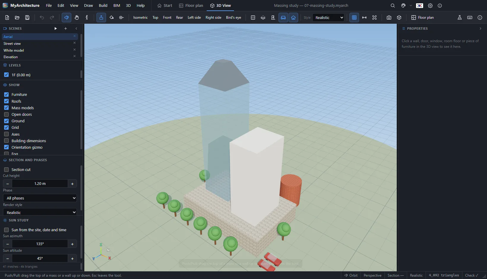
Turn on Push/Pull (toolbar, 3D menu, or a mass's Push/Pull in 3D button) and drag the top face of a mass or wall up or down to change its height in 50 mm steps (masses at least 100 mm, walls at least 300 mm). While dragging, the hint cell shows height: … m. One drag is one undo step. Press the same button again or Esc to leave the tool.
5.10 Paint bucket
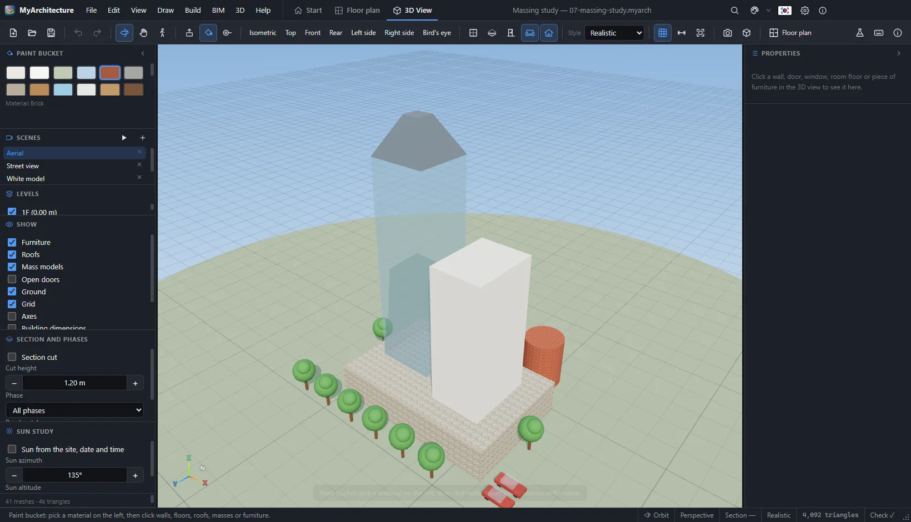
When Paint bucket is on, material swatches (all wall, floor and roof materials) appear on the left. Pick a swatch (“Material: …”) and click the model:
| What you click | What changes |
|---|---|
| Wall, roof, mass, column, stair | Its material |
| Room floor | The floor material |
| Furniture | Its colour, set to the material's colour |
| Door or window | Nothing |
5.11 Tape measure
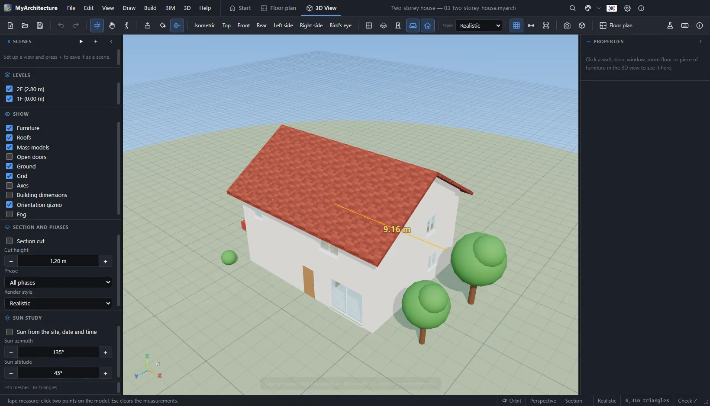
Turn on Tape measure and click two points on the model: a yellow line and the distance stay between the points, and a “Distance: … m” notice appears. You can take several measurements; they are cleared when you leave the tool with Esc.
5.12 Sun study
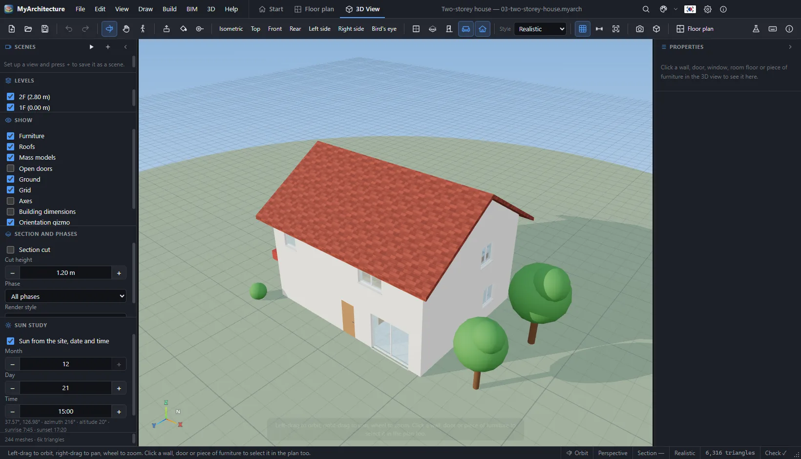
The Sun study panel on the left:
- With Sun from the site, date and time off, you set the Sun azimuth (15° steps) and Sun altitude (5° steps) yourself (135° and 45° by default).
- With it on, the real sun position is calculated from Month, Day and Time (30-minute steps). Below them the latitude and longitude, azimuth, altitude and sunrise and sunset times are shown; when the sun is below the horizon the altitude reads
<0. The Site location… button opens the project properties (latitude, longitude, time zone, north direction — section 6.8). - The azimuth is measured clockwise from north and takes the project's North rotation into account.
- Shadows are switched on and off in Settings → 3D view → 3D shadows: Sun shadows (the Line drawing style has no shadows).
5.13 Scenes
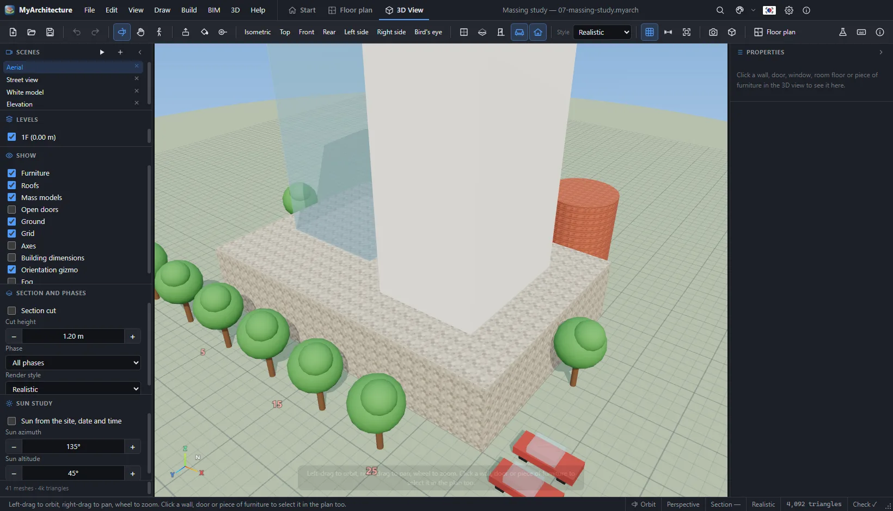
- + in the Scenes panel (or 3D → Add scene, the 3D right-click menu) saves the current camera, projection, display style, section height and phase view in the project as “Scene 1, Scene 2…”.
- Click a scene name to fly smoothly to that view. Delete it with ×.
- ▶ (Play the scenes, 3D → Play scene animation) goes through the scenes in turn and keeps playing (about 2.5 seconds per scene). Press it again (■ Stop) to stop. With no scenes: “Add scenes first…”.
5.14 Selecting and right-clicking in 3D
- Clicking a wall, door, window, room floor, piece of furniture and so on highlights it in blue and selects it in the plan as well. The right panel shows its name, level, the height you clicked at and the buttons Show in plan / Properties….
- Show in 3D on an element in the plan (right-click, the button in the furniture properties) highlights it on the 3D tab.
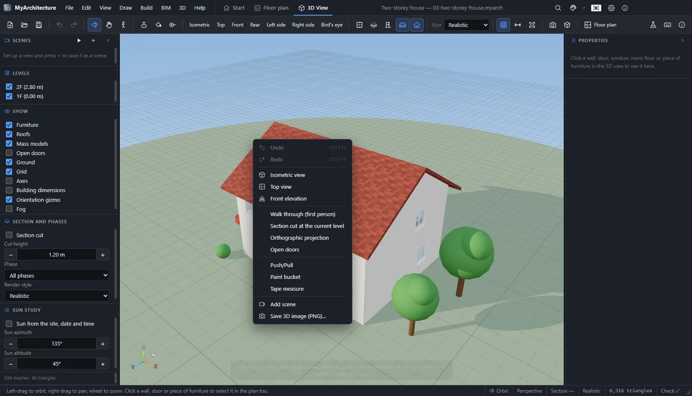
Releasing the right button without moving opens the menu: (Show in plan at the top if you clicked an element) · Undo · Redo / Isometric view · Top view · Front elevation / Walk through (first person) · Section cut at the current level · Orthographic projection · Open doors / Push/Pull · Paint bucket · Tape measure / Add scene · Save 3D image (PNG)…. A right-drag still pans.
5.15 Saving images and exporting 3D
- Save 3D image (PNG)…: saves the current 3D view as it is, as
title-3d.png. - Export 3D model…: section 7.5.
6. BIM
Elements in the plan (walls, doors and windows, rooms, columns, stairs, furniture, roofs, masses, grids) carry BIM data. Select an element to see it in the BIM section at the bottom of the right panel.
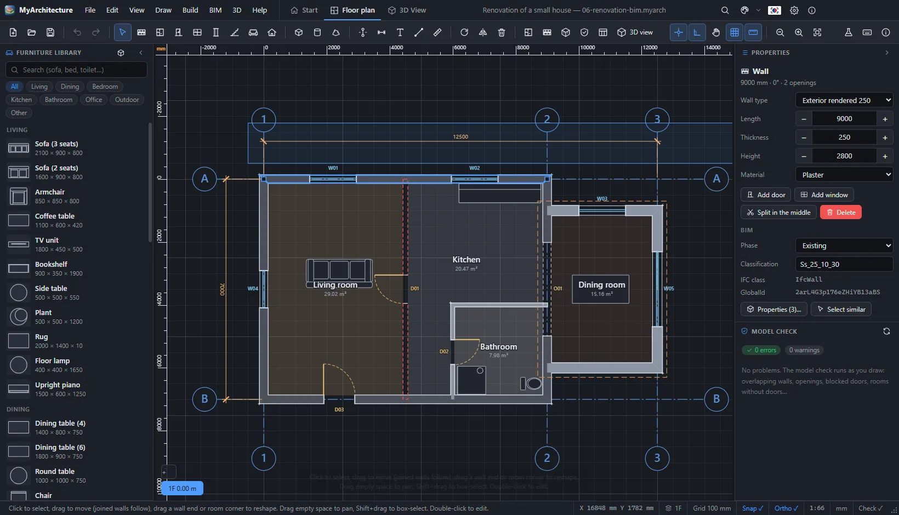
| Field | Description |
|---|---|
| Phase | Existing / New / Demolish (not for grids) |
| Classification | A classification code (a Uniclass 2015 code, for example). The name of the system is set in the project properties |
| IFC class | The IFC class it is exported as (read-only) — walls IfcWall, doors and windows IfcDoor / IfcWindow, rooms IfcSpace, columns IfcColumn, stairs IfcStair, furniture IfcFurniture, roofs IfcRoof, grids IfcGrid, masses IfcBuildingElementProxy |
| GlobalId | The IFC GlobalId (22 characters). Click to copy it to the clipboard |
| Properties (n)… | The custom properties window (section 6.4) |
| Select similar | Section 4.9 |
6.1 Wall types
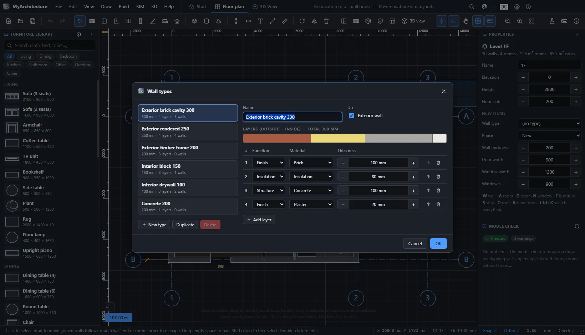
BIM → Wall types… (the Wall types button on the toolbar):
- The list on the left: per type its total thickness · number of layers · number of walls using it. New type, Duplicate, Delete (only when there are at least two types and no wall uses it).
- On the right: Name, the Use: Exterior wall tick, a section drawing of the layers (outside on the left) and the layer table — Function (Finish / Insulation / Structure / Air gap), Material (the wall materials plus Insulation and Air gap), Thickness (a stepper in 5 mm steps), Move up, Delete. Add layer.
- “Layers (outside → inside) — total … mm”. Pressing OK changes the thickness of every wall that uses the type to the new total.
Wall types in a new project:
| Name | Layers (outside → inside) | Total |
|---|---|---|
| Exterior brick cavity 300 | Brick 100 · Insulation 80 · Concrete 100 · Plaster 20 | 300 |
| Exterior rendered 250 | Plaster 20 · Insulation 60 · Concrete 150 · Plaster 20 | 250 |
| Exterior timber frame 200 | Wood cladding 25 · Insulation 150 · Plaster 25 | 200 |
| Interior block 150 | Plaster 15 · Concrete 120 · Plaster 15 | 150 |
| Interior drywall 100 | White paint 13 · Insulation 74 · White paint 13 | 100 |
| Concrete 200 | Concrete 200 | 200 |
Assigning a type to a wall: select the wall and pick from Wall type in the right panel (for several walls, select them first, for example with Select similar). The layer boundaries are drawn in the plan. The type for walls you are about to draw is New items → Wall type in the right panel when nothing is selected. Changing a wall's thickness directly releases its type.
6.2 Phases (renovation)
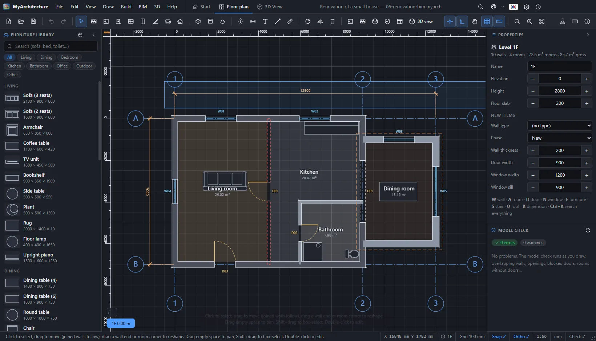
- Every element has a Phase: Existing (drawn faintly), New (normal) or Demolish (red dashed outline).
- The phase for elements you are about to draw: New items → Phase in the right panel.
- View → Phases: show all / Phases: new design / Phases: existing building (or Phase in the 3D left panel):
| Phase view | What is shown |
|---|---|
| All phases | Everything |
| New design (no demolition) | Existing + new (after the works) |
| Existing (before works) | Existing + demolished (before the works) |
- Only New work goes into the cost estimate (existing work costs 0 and demolished work is left out).
6.3 Classification and IFC
- Enter a code in the Classification field and the system name in Project properties → Classification system (
Uniclass 2015by default); they are exported as an IFC classification reference. - Phases, wall types (layer materials), grids and custom properties are all included in the IFC export (section 7.5).
6.4 Custom properties (BIM properties)
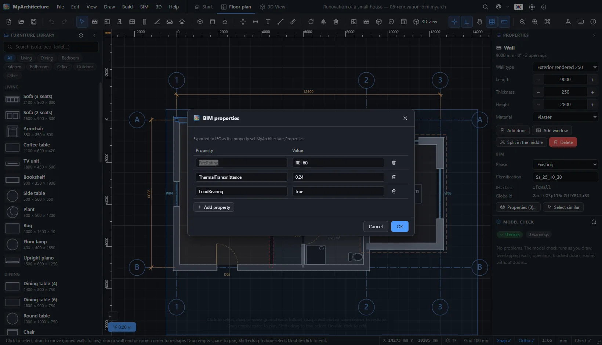
BIM → BIM properties of the selection… (right-click BIM properties…, Properties (n)… in the BIM section):
- A Property / Value table. Add property adds a row and the bin deletes one. The property name box suggests
FireRating, AcousticRating, ThermalTransmittance, LoadBearing, Manufacturer, Model, Cost, Mark, Comments. - Numeric values are stored as numbers, and
true/falseas booleans. - With several elements selected: “The properties are written to all n selected elements.” With one: “Exported to IFC as the property set MyArchitecture_Properties.”
- Text, dimensions, CAD lines and underlays cannot have properties. With nothing selected: “Select one or more elements first.”
- A
priceproperty on furniture is used as the furniture amount in the cost estimate.
6.5 Schedules (schedules and quantities)
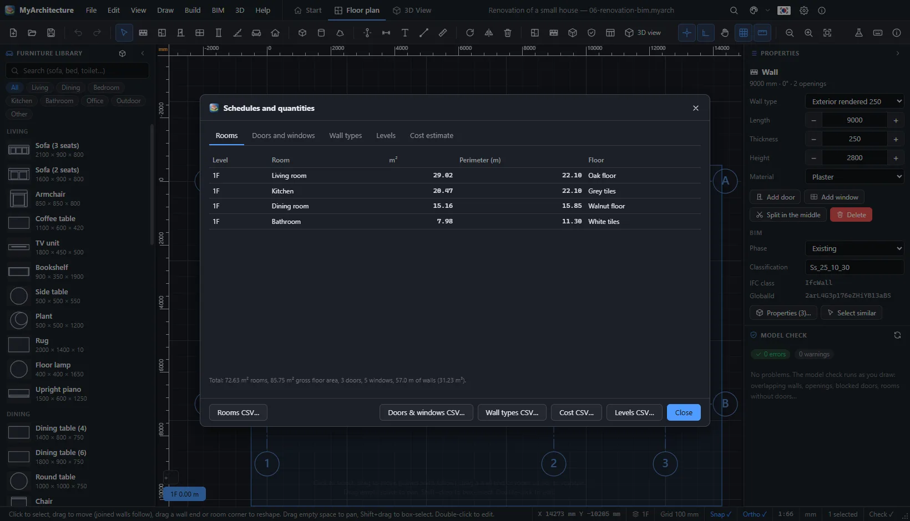
Build → Schedules and quantities… (the toolbar and File → Export ▸ Export schedules (CSV)… open the same window; BIM → Cost estimate… opens it on the Cost estimate tab):
| Tab | Columns |
|---|---|
| Rooms | Level, Room, m², Perimeter (m), Floor |
| Doors and windows | Tag, Kind, Type, Level, Width, Height, Sill height |
| Wall types | Wall type (walls without a type are grouped by thickness), Thickness, Layers, Walls, Length (m), Wall area (m²) |
| Levels | Level, Elevation, Walls, Wall length (m), Wall area (m², one side, openings deducted), Rooms, Room area (m²), Gross area (m², to the outside of the walls), Doors, Windows |
| Cost estimate | Section 6.6 |
Long tables are split into pages of 12 rows. A Total line below (room area, gross floor area, numbers of doors and windows, wall length and volume) follows.
The buttons at the bottom, Rooms CSV… · Doors & windows CSV… · Wall types CSV… · Cost CSV… · Levels CSV…, save that table as title-rooms.csv and so on. The CSV files are UTF-8 with a BOM, so Excel shows non-English text (such as Korean room names) correctly.
6.6 Cost estimate
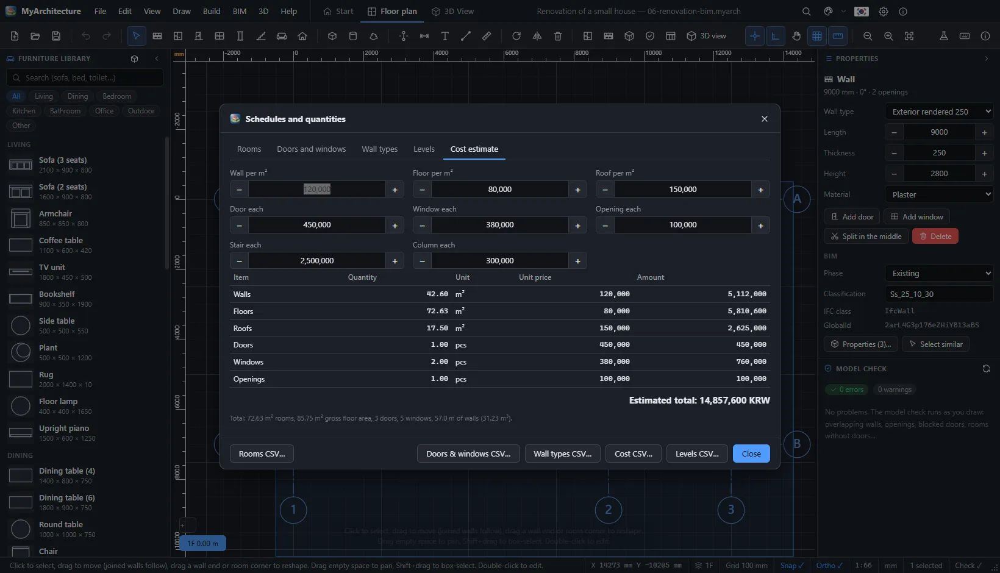
Changing the unit prices at the top of the Cost estimate tab (steppers in steps of 10,000; you can also type a value) recalculates the table at once, and the prices are saved in the project when you close the window (one undo step, “Unit prices”).
| Unit price field | Table item | Quantity | Default unit price (KRW) |
|---|---|---|---|
| Wall per m² | Walls | One-side area of new walls (openings deducted), m² | 120,000 |
| Floor per m² | Floors | Area of new rooms, m² | 80,000 |
| Roof per m² | Roofs | Plan area of new roofs, m² | 150,000 |
| Door each | Doors | Number of new doors, pcs | 450,000 |
| Window each | Windows | Number of new windows, pcs | 380,000 |
| Opening each | Openings | Number of new openings, pcs | 100,000 |
| Stair each | Stairs | Number of new stairs, pcs | 2,500,000 |
| Column each | Columns | Number of new columns, pcs | 300,000 |
| — | Furniture | New furniture, pcs | The sum of each piece's price property |
Columns: Item, Quantity, Unit, Unit price, Amount. At the bottom: “Estimated total: … KRW”. Items with a quantity of 0 are left out of the table.
6.7 Model check
The model check is the architectural counterpart of ERC/DRC in circuit design.
- By default it runs continuously while you draw (Settings → Floor plan → Run the model check while drawing).
- F5 (Build → Model check, the toolbar, the Check cell in the status bar) checks now, reports “Model check: n errors, n warnings” or “Model check passed — no problems found.”, and opens the right panel.
- The Model check list at the bottom of the right panel: pills with the error and warning counts, and for each issue its message and
code · level. Clicking an issue goes to that level, zooms to the problem, flashes an orange circle there and selects the elements involved. The ↻ button checks again. - Problem locations are also marked in the plan. The Floor plan tab and the collapsed right panel carry count badges.
All the rules (with the messages exactly as shown on screen) are in section 12.2.
6.8 Project properties and the site
File → Project properties… (BIM → Site location (sun study)… opens the same window):
| Field | Used for |
|---|---|
| Title | The document title, the suggested file name, the drawing title block, the IFC project name |
| Client, Address | Small print in the title block |
| Drawn by, Company | “Drawn by” in the title block, the IFC author and organisation |
| Revision, Date | The title block |
| Drawing scale | 1:20 / 1:50 / 1:100 / 1:200 / 1:500 — the default print scale and the size of SVG exports |
| North | Rotation of north (−180° to 180°, 5° steps) — the north arrow and the sun direction |
| Latitude, Longitude | The sun study (Seoul by default, 37.57°, 126.98°) |
| Time zone (UTC+) | Time of day for the sun study (UTC+9 by default, 0.5 steps) |
| Classification system | The IFC classification reference name (Uniclass 2015 by default) |
| Comment | Notes |
7. Files
7.1 New, open and save
| Command | Key | Description |
|---|---|---|
| New project | Ctrl+N | An empty plan (level 1F, storey height 2800, mm units). Switches to the Floor plan tab with “New project. Press W to draw walls.” |
| Open… | Ctrl+O | .myarch (and every importable format — it is handed to the matching import) |
| Save | Ctrl+S | If the file already has a path, overwrites it without asking |
| Save as… | Ctrl+Shift+S | A new file name (default: title.myarch) |
| Exit | Alt+F4 | Desktop edition only |
- If there are unsaved changes, New, Open, a sample, the tutorial and Exit first ask “Save changes to "…" before closing?” — Cancel / Don't save / Save.
- You can also drag and drop files (projects, DXF, 3D models, images …) onto the window to open or import them. 3D models and images dropped on the Floor plan tab go where you drop them.
.myarchis a JSON text file that holds everything in the project (levels, elements, wall types, unit prices, scenes, imported 3D models and underlay images).
7.2 Autosave and recovery
- Settings → General → Autosave: Keep a recovery copy (on by default) and Autosave interval (10 seconds to 10 minutes, 30 seconds by default).
- A recovery copy is written only while there are unsaved changes. It is removed when you save normally.
- If a copy exists at the next start, the Recover work window asks: “An unsaved project from … was recovered. Restore it?” — Restore (opens with the changed marker ●) / Discard.
7.3 Recent files
- Files you opened or saved (including imported DXF files, 3D models and so on) are remembered, newest first, up to 10 (Settings → General → Recent files to remember, 1 to 30). The Recent list on the start page shows the same number.
- File → Recent files…: a list of names, paths and times. Click to open; × (Remove from the list) removes one entry, Clear list removes them all. The files themselves are not deleted.
- File → Clear recent files and Clear list on the start page do the same (“The recent files list was cleared.”).
- Files that can no longer be opened (moved or deleted) drop out of the list when you try to open them.
7.4 Import
File → Import (DXF, IFC, 3D models, images…)… (Ctrl+I) opens a file chooser for every supported file. File → Import ▸ lists the commands per format: Import (all) · Import DXF drawing… · Import IFC (BIM)… · Import 3D model (OBJ, FBX, GLB, STL…)… · Import SVG drawing… · Import image as tracing underlay….
| Format | How it is imported |
|---|---|
| DXF (.dxf) | The Import DXF drawing window: Units in the file (Detect automatically / mm / cm / m / inches / feet), Level (the level to put it on), Move the drawing to the plan origin. Lines, polylines, arcs, circles, splines, texts, blocks and hatch outlines come in on their own CAD layers. Afterwards: “Imported …: n drawing items, n texts (units)”, plus an Import notes window if there is anything to watch out for |
| SVG (.svg) | The Import SVG drawing window (the same fields as above). Paths, shapes and texts come in on the layer SVG |
| IFC (.ifc) | Replaces the current project (after asking to save). Reads levels, walls, doors and windows, rooms, slabs, roofs, stairs, columns and furniture and opens them as a new project (named filename.myarch, unsaved). “Imported …: n levels, n walls, n doors/windows, n rooms.” |
| 3D models (.obj .fbx .glb .gltf .stl .dae .3mf .3ds .ply .wrl .amf) | The Import 3D model — name window: Units in the file (Detect automatically …), Up axis (Automatic / Y is up / Z is up). The model becomes a piece of furniture, placed in the centre of the view on the current level (or where you dropped it), and is stored inside the project file. You can place it again as often as you like from “Imported 3D models” in the furniture library. OBJ files also read the .mtl materials file of the same name in the same folder |
| Images (.png .jpg .jpeg .webp .gif .bmp) | The Import image as tracing underlay window: Width of the image in the plan (mm), Opacity (10 to 100%). It is laid under the current level as an underlay |
| Projects (.myarch, .json) | Same as Open |
7.5 Export
File → Export ▸: Export DXF (AutoCAD)… · Export IFC (BIM)… · Export 3D model… · Export plan as PDF… · Export plan as SVG · Export plan as PNG image · Export schedules (CSV)…. File names are suggested from the project title.
| Export | Options and result |
|---|---|
| DXF | Choose the Level; One file per level (when ticked, title-level.dxf for each level). AutoCAD R12 DXF in millimetres with standard layers (A-WALL, A-DOOR, A-GLAZ, A-AREA, A-FURN, A-ANNO-DIMS …). Every CAD program opens it |
| IFC | IFC version: IFC4 (Reference View) / IFC2X3 (Coordination View 2.0). Storeys, walls with openings, doors, windows, spaces, floor slabs, roofs, stairs, columns and furniture + wall types, phases, classifications, grids and custom properties. For Revit, ArchiCAD, BIMcollab, Solibri and any IFC viewer |
| 3D model | See 7.5.1 |
| Opens the print window (section 7.6) for saving a PDF | |
| SVG | The plan of the current level as an SVG at true scale (the drawing scale) in mm, title-level.svg |
| PNG | Image width (1000 to 8000 px), Colour: Black and white. The plan of the current level as an image on a white background |
| CSV | The schedules window (section 6.5) |
7.5.1 Exporting a 3D model
3D → Export 3D model… (or the 3D toolbar, Export ▸):
| Format | Use | File |
|---|---|---|
| GLB (glTF binary) | Blender, Unity, Unreal, web viewers, Windows 3D Viewer — colours and textures | .glb |
| glTF (JSON) | Same as GLB as a text file with embedded data | .gltf |
| OBJ + MTL (ZIP) | Almost every 3D program; materials in the MTL file | title-obj.zip |
| Collada (DAE) | SketchUp, 3ds Max, Blender | .dae |
| FBX | Not written directly: import the GLB or DAE into Blender and export FBX | (not selectable) |
| STL | 3D printing, mechanical CAD — geometry only | .stl (binary) |
| 3MF | 3D printing with colours (Windows 3D Builder, PrusaSlicer, Cura) | .3mf (always mm) |
| PLY | Mesh exchange (MeshLab, CloudCompare) | .ply |
| USDZ | Apple AR Quick Look (iPhone, iPad, Mac) | .usdz |
Units: Metres (glTF standard) / Millimetres (3D printing, CAD). Only what is visible in the 3D view is exported (hidden levels, furniture or roofs are left out).
7.6 Printing and PDF
File → Print / PDF… (Ctrl+P) — options on the left, a preview of the drawing sheet on the right (turn pages with ◀ ▶; “1 / 2 — Floor plan — 1F · 1:100”).
The Contents tab:
- Levels (one sheet each): tick the levels to print (the current level by default). With none ticked: “Tick at least one level”.
- Show: Furniture, Dimensions, Room areas, Roofs (dashed), CAD layers.
- Colour: Black and white.
The Page tab:
- Paper: A4, A3, A2, A1, A0, Letter, Tabloid (the default comes from Settings → Output → Default paper, initially A3).
- Orientation: Landscape / Portrait.
- Drawing scale: Fit to page, 1:20, 1:50, 1:75, 1:100, 1:150, 1:200, 1:250, 1:500, 1:1000 (the project's drawing scale by default). Fit to page picks the nearest standard scale that fits.
- “Title block from File → Project properties.”
Each sheet has a border, a title block in the lower right (title, client and address, the drawing “Floor plan — level”, scale, sheet number n / total, drawn by, date, revision), and a north arrow (following the north rotation) and scale bar in the lower left.
Buttons:
| Button | Result |
|---|---|
| Save as SVG… | One SVG file in mm per sheet |
| Save as PDF… | (Desktop edition) all sheets in one PDF file |
| Print… | The operating system's print dialog (in the web edition, choose the “Save as PDF” printer here) |
7.7 Closed formats (DWG, SKP, RVT, PLN, 3DM)
These are proprietary, closed formats that cannot be read directly. If you try to open one, a Format not supported window explains what to do and offers a Supported file formats… button.
| File | What to do |
|---|---|
| DWG (AutoCAD) | Save as DXF in a CAD program (AutoCAD, BricsCAD, ZWCAD, DraftSight, LibreCAD or the free ODA File Converter), then import the DXF |
| SKP (SketchUp) | In SketchUp use File → Export → 3D Model and export as Collada (.dae), OBJ or glTF, then import that |
| RVT (Revit) | In Revit use File → Export → IFC, then import the IFC file |
| PLN (ArchiCAD) | Save as IFC in ArchiCAD, then import it |
| 3DM (Rhino) | Export OBJ, STL or glTF from Rhino, then import it |
Help → Supported file formats… shows the table in section 12.1.
8. Settings and appearance
8.1 The Settings window
Help → Settings… (Ctrl+,, the gear in the title bar). The tabs are General · Appearance · Units & grid · Floor plan · 3D view · Output. OK applies, Cancel discards, and Reset to defaults (lower left) asks for confirmation and returns every setting to its initial value (theme Midnight).
General
| Setting | Values | Default |
|---|---|---|
| Language | 한국어 / English | The system language |
| On start-up | Show the start page / Reopen the last project | Show the start page |
| Recent files to remember | 1 to 30 (the number shown on the start page and in the recent files list) | 10 |
| Welcome | Show the welcome window at start-up | Off |
| Autosave | Keep a recovery copy | On |
| Autosave interval | 10 s, 15 s, 30 s, 1 min, 2 min, 5 min, 10 min | 30 s |
Appearance
| Setting | Values | Default |
|---|---|---|
| Theme | The current theme's name + a Themes… button (the theme gallery) | Midnight |
| Interface size | 80% to 150% (80, 90, 100, 110, 125, 140, 150) | 100% |
| Animations | Animate dialogs, menus and the start page | On |
| Hints | Show tool hints on the canvas | On |
| Hint duration | Always, 3, 5, 7, 10, 15, 30 s | 7 s |
Units & grid
| Setting | Values | Default |
|---|---|---|
| Units | mm / cm / m / feet / inches (shown as feet and inches) | mm |
| Grid | 10, 25, 50, 100, 250, 500, 1000 mm | 100 mm |
| Grid style | Lines (5 × 5) / Dots | Lines |
| Grid | Show grid | On |
| Rulers | Show rulers on the canvas edges | On |
| Snapping | Snap to the grid, wall ends and walls | On |
| Drawing | Walls in 45° steps (hold Shift for any angle) | On |
| Left-drag on empty canvas | Pan the view (Shift+drag = box select) / Box select | Pan the view |
| Wheel zoom speed | × 0.5 to × 3 | × 1 |
The units are used for displaying coordinates and lengths and on the rulers (internally, and by default for input, everything is in mm; you can add a unit when typing a length). You can also change them with the Units cell in the status bar.
Floor plan
| Setting | Values | Default |
|---|---|---|
| Wall drawing | Solid (poché) / Hatched / Outline only | Solid |
| Show | Dimensions · Furniture · Room areas · Door and window tags | All on |
| Show | The level below (faint) · Roofs (dashed) · Image underlays · CAD layers | All on |
| Checks | Run the model check while drawing | On |
| Cross-selection | Selecting in the plan highlights it in 3D and back | On |
| New roofs | Gable / Hip / Shed / Flat | Gable |
3D view
| Setting | Values | Default |
|---|---|---|
| 3D background | Sky / Theme colour | Sky |
| 3D shadows | Sun shadows | On |
| Field of view | 20° to 90° (5° steps) | 45° |
| Rotate speed | × 0.25 to × 3 | × 1 |
| 3D measurement unit | Metres (m) / Feet (ft) — grid labels, building dimensions, tape measure | Metres |
| Start with | Grid with scale · Ground | All on |
| Sun azimuth | 0° to 355° | 135° |
| Sun altitude | 5° to 90° | 45° |
Output
| Setting | Values | Default |
|---|---|---|
| Default paper | A4, A3, A2, A1, A0, Letter, Tabloid | A3 |
Default sizes (Build menu)
Build → Default sizes (walls, doors, windows)… sets the sizes of elements you are about to draw (“New walls, doors and windows use these sizes.”): Wall thickness (200), Stair width (1000), Door width (900), Door height (2100), Window width (1200), Window height (1200), Window sill (900), Text size (300), Door type (Single/Double/Sliding), Window type (Casement/Fixed/Sliding), Wall material (Plaster), Floor material (Oak floor). The values in brackets are the initial values. They are stored as program settings and apply to other projects too.
8.2 Themes
- The palette button in the title bar: a random theme (with a “Theme: name” notice).
- ▾ (Choose a theme): three columns, 20 dark themes · 20 light themes · Custom themes. The current theme is highlighted. New custom theme…, × on a custom theme (delete), Automatic → Follow the system.
- Theme gallery (Settings → Appearance → Themes…, “Themes…” in the command palette): a gallery of sample cards and the tick box “Follow the system light/dark setting (uses the last dark and light themes you picked)”.
- The Custom theme window: Name, Type (Dark/Light), Accent, Background, Panels and Text colours. Changes are previewed at once on the whole program and the plan canvas. Save theme.
- The plan drawing and the 3D background (a sky gradient) follow the theme's brightness too.
You can also switch directly with Themes…, Dark theme, Light theme and System theme at the end of the View menu (and in the command palette).
8.3 Language
The language button switches between English and Korean: the flag button in the title bar (English ↔ 한국어), Settings → General → Language, or 한국어 / English in the command palette. The change is immediate; there is no need to restart. On the first start, the program starts in Korean if the system language is Korean and in English otherwise.
8.4 Interface size (UI scale)
Settings → Appearance → Interface size enlarges or shrinks all text, buttons and panels between 80% and 150%. Useful on high-resolution screens and for presentations.
8.5 The About window
Help → About MyArchitecture (ⓘ in the title bar): the program icon, the description “Architectural drawing and 3D tool” with four lines of features, and a table of Program · Build (commit and branch) · Build date · Author · Edition (Desktop/Web) · Operating system · Runtime · 3D engine (three.js) · Library (numbers of furniture items and materials) · File formats · Language / theme · License (freeware). Copy information copies this table to the clipboard (paste it into your support request).
9. Tutorial
Help → Interactive tutorial (the first card on the start page, the flask button on the toolbar) teaches every feature by driving the real program. It changes the current project, so if there are unsaved changes it first asks whether to save them.
9.1 Two modes
- Watch: the program moves the cursor and performs each step itself. ▶ Play / ■ Pause, Previous step, Run next step, Speed 0.5× · 1× · 2× · 4×.
- Practice: the task appears under “Your turn:”, and the place to click is marked on screen. When you manage it, it is checked automatically (“✓ Well done!”) and moves on to the next step a moment later. If you are stuck, use Show me (the program does it for you); explanation-only steps have Next; to skip a step, Skip.
You can move the tutorial window by dragging its title, and pick any lesson from the list at the top. A progress bar and “Step n / total” are shown. If you jump to a lesson that needs the results of earlier lessons, it starts after “Preparing the result of the earlier lessons…”. If a step does not finish as expected, choose Retry / Skip.
9.2 The lessons (16 lessons, 83 steps)
| # | Lesson | Covers |
|---|---|---|
| 1 | Finding your way around | Opening a sample, zoom to fit, panning, switching levels, the 3D view, back to the plan, Ctrl+K |
| 2 | Drawing walls | A new project, four outside walls, a partition (T joint), typing a length, wall thickness, moving a wall and undoing, the undo and redo buttons |
| 3 | Doors and windows | The front door, windows, inside doors, the swing (X/H), door width |
| 4 | Rooms and areas | Clicking inside walls for a room, renaming, room number and area |
| 5 | Furnishing | The library, rotating, searching with F, dragging to move, the properties window |
| 6 | Editing: select, copy, group | Box select, duplicate and delete, undo history, group, ungroup, scale |
| 7 | Dimensions, text and grids | Automatic dimensions, dimensions, text, measuring, structural grids, CAD lines |
| 8 | Levels and stairs | Stairs, adding a level on top, level properties, back to the level below |
| 9 | Roofs and columns | An automatic roof, a hip roof, columns |
| 10 | Massing (SketchUp style) | A mass box, height and taper, a cylinder, push/pull, the paint bucket, the tape measure, scenes |
| 11 | BIM: wall types, properties, phases | Wall types, assigning a type, BIM properties, construction phases, select similar, schedules and the cost estimate |
| 12 | Model check | Making a problem, running the check, fixing it |
| 13 | The 3D view in depth | Views, display styles, section, orthographic projection and elevations, walking, the sun study, selecting in 3D |
| 14 | Import and export | Importing DXF, 3D models and images, exporting 3D, DXF and IFC, printing and PDF |
| 15 | Settings and appearance | Settings, themes, units, the status bar and window size, collapsing panels |
| 16 | Advanced features in the samples | Renovation phases, playing massing scenes, the apartment block section, tracing a DXF |
Lessons 2 to 14 build one small house step by step. Lessons 1, 2 and 16 can be started on their own. When you have finished all the lessons, the project you built stays open — save it or keep editing.
9.3 The tutorial and your settings
While the tutorial is open, it temporarily resets the drawing settings (grid, snap, ortho, units, phase view, panel visibility, 3D view state and so on) so that the lessons behave as described. When you close the tutorial (✕ End tutorial), your own settings come back. Theme, language, interface size, animations, hints, autosave, the number of recent files and the start-up setting are never touched.
9.4 The tutorial video
MyArchitecture-Tutorial.mp4 in the program folder is a recording of the whole tutorial (16 lessons) in watch mode. Use it to preview the program without running it, or as teaching material.
10. All keyboard shortcuts
Help → Keyboard shortcuts (Ctrl+/, the keyboard button on the toolbar) shows the same keys, grouped as General · Floor plan · Navigation · 3D.
General
| Key | Action |
|---|---|
| Ctrl+K | Command palette — search every command, room and level |
| Ctrl+N | New project |
| Ctrl+O | Open |
| Ctrl+S | Save |
| Ctrl+Shift+S | Save as |
| Ctrl+I | Import (DXF, IFC, 3D models, images…) |
| Ctrl+P | Print / PDF |
| Ctrl+Z | Undo |
| Ctrl+Y or Ctrl+Shift+Z | Redo |
| Ctrl+F | Find |
| Ctrl+, | Settings |
| Ctrl+/ | Keyboard shortcuts |
| Ctrl+1 / Ctrl+2 | Collapse or expand the left / right panel |
| F1 | User manual |
| F2 | Floor plan |
| F3 (or F4) | 3D view |
| F5 | Model check |
| F8 | Orthogonal drawing on/off |
| F9 | Snap on/off |
| Home | Zoom to fit (plan and 3D) |
| Alt+F4 | Exit (desktop) |
Floor plan — tools
| Key | Tool |
|---|---|
| W | Wall |
| A | Room |
| D / N | Door / Window |
| C | Column |
| S | Stair |
| F | Furniture (search window) |
| O | Roof |
| B / U | Mass box / Mass cylinder |
| G | Grid line |
| K | Dimension |
| T | Text |
| L | Line |
| M | Measure |
| Esc | Finish drawing → cancel a measurement or stair → leave hand mode → Select tool → clear the selection (in that order) |
Floor plan — editing
| Key | Action |
|---|---|
| R / Shift+R | Rotate 90° / back 15° (rotates the preview while placing furniture or columns) |
| X / Y | Mirror horizontally (flips the swing of doors) / mirror vertically |
| H | Swap door hinge |
| E or double-click | Edit properties |
| Ctrl+C / Ctrl+X / Ctrl+V | Copy / cut / paste (at the cursor) |
| Ctrl+D | Duplicate |
| Ctrl+A | Select all |
| Ctrl+G / Ctrl+Shift+G | Group / ungroup |
| Del / Backspace | Delete |
| Arrow keys / Shift+arrow keys | Nudge by one / ten grid steps |
| Ctrl+= / Ctrl+- | Zoom in / zoom out |
Floor plan — while drawing
| Key | Action |
|---|---|
A digit or . | Opens the length box (walls and lines) |
| Enter | Finish drawing (walls, lines, rooms, roofs, mass shapes) |
| Backspace | Undo the last corner |
| Hold Shift | Any angle |
| Shift+click | Rooms and roofs: draw the corners yourself / furniture: keep placing |
| Alt+drag | Move without stretching joined walls |
| Alt+click | Select a single item inside a group |
Navigation (floor plan)
| Key / action | Result |
|---|---|
| Wheel / Ctrl+wheel / pinch | Zoom |
| Shift+wheel | Pan sideways |
| Drag empty space, middle- or right-drag, Space+drag | Pan |
| Shift+drag, Ctrl+drag | Box selection (right-to-left: crossing) |
| Right-click (without moving) | The right-click menu |
3D
| Key / action | Result |
|---|---|
| Left-drag / right-drag / wheel | Orbit / pan / zoom (left and right swap in pan mode) |
| Double-click | Zoom in on that point |
| 1 to 7 | Iso / top / front / rear / left side / right side / bird's eye |
| P | Pan mode |
| V | Walk through (WASD, Q/E up/down, drag to look) |
| O | Orthographic (parallel) projection |
| X | Section |
| G | Grid |
| Arrow keys / Shift+arrow keys | Orbit / pan |
| Esc | Leave the tool (Push/Pull, Paint bucket, Tape measure) → leave walk or pan mode |
While walking
| Key | Action |
|---|---|
| W A S D | Forward / left / back / right |
| ↑ ↓ | Forward / back |
| ← → | Turn left / right |
| E / Page Up, Q / Page Down | Rise, sink |
| Shift | Run |
| Drag / wheel | Look around / one step forward or back |
| Esc, V | Stop walking |
11. Troubleshooting and FAQ
The program does not open, or a second window does not open. Only one MyArchitecture runs at a time. If it is already running, its window comes to the front and the file opens there. Look for the existing window on the taskbar.
Walls will not go at the angle I want / the length only changes in steps of 100. With ortho (F8) on, walls are held to 45° steps and grid steps. Hold Shift while drawing, turn off ortho and snap (F9), make the grid spacing smaller, or type the length and angle as numbers (3600<30).
I clicked with A but no room appeared. The walls must be fully closed. Check that the wall ends really touch each other (or another wall) — while drawing a wall, an end-point (orange square) or wall (green triangle) snap marker shows that it touches. Where the outline is not closed, you can still make a room by drawing its corners with Shift+click. Very small areas (under 0.01 m²) are ignored.
Inserting a door says “This wall is too short for it.” The wall is shorter than the door width + 20 mm. Reduce New items → Door width in the right panel or lengthen the wall. If the wall is split into several pieces, right-click → Merge straight walls.
Dragging empty space pans instead of drawing a selection box. That is the default. Use Shift+drag, or change Settings → Units & grid → Left-drag on empty canvas → Box select.
Dragging an element only moves the view. Hand (pan) mode is on. Turn it off with Esc or the hand button on the toolbar.
The 3D view is empty or parts are missing. Check the Levels ticks, Show (Furniture, Roofs, Mass models), the Phase view and Section in the 3D left panel. If navigation has got muddled, press 1 (isometric) or Home. If you see “3D view is not available”, check your graphics driver (WebGL).
Clicking in 3D does not select anything. While the Push/Pull, Paint bucket or Tape measure tool is on, clicks go to the tool. Turn it off with Esc. Parts cut away by the section cannot be selected.
I want to ignore model check warnings. Warnings never block your work. If the continuous checking while drawing bothers you, turn off Settings → Floor plan → Run the model check while drawing and press F5 when you need it.
An imported DXF is far too big or small / is somewhere else entirely. In the import window choose the Units in the file yourself and tick Move the drawing to the plan origin. Then press Home.
An imported 3D model has the wrong size / is lying on its side. Change Units in the file and Up axis (Y is up / Z is up) in the import window and import it again. After import you can still change its width, depth and height in the right panel or use Scale….
I want to open DWG / SKP / RVT files. They cannot be read directly. Convert them to DXF / DAE, OBJ or glTF / IFC as described in section 7.7 and import those.
There is no Save as PDF button. Not in the web edition. Press Print… and choose “Save as PDF” in the browser's print dialog, or use Save as SVG….
The program closed before I saved. If autosave was on, press Restore in the Recover work window at the next start (section 7.2).
After the tutorial my grid and unit settings have changed. The tutorial restores your settings when it closes. Make sure you closed it with ✕ (End tutorial) in the tutorial window. If the program was forced to quit, set them again in the Settings window.
Everything is too small or too large / I cannot make the window any narrower. Change Settings → Appearance → Interface size. The minimum window size is set so that no menu, tab or toolbar button is ever hidden, so a smaller interface size also lets you make the window narrower.
I want to reset the settings. Settings → Reset to defaults. To wipe them completely, quit the program and delete settings.json (location in section 1.2).
F1 does not open the manual. F1 opens docs/USERSGUIDE.en.html in the program folder (USERSGUIDE.ko.html in the Korean interface) in a separate window. This HTML is built from this document (docs/UsersGuide.en.md), so if it does not open you can read docs/UsersGuide.en.md directly for the same content.
12. Appendix
12.1 Supported formats
| Format | Extension | Import | Export | Use |
|---|---|---|---|---|
| MyArchitecture project | .myarch | ✓ | ✓ | Everything (JSON) |
| AutoCAD DXF | .dxf | ✓ | ✓ | 2D drawing; import as CAD layers, export with A-WALL/A-DOOR… layers (R12) |
| IFC (BIM) | .ifc | ✓ | ✓ | IFC4 / IFC2X3: storeys, walls, doors, windows, spaces, slabs, roofs, stairs, columns, furniture |
| glTF / GLB | .gltf .glb | ✓ | ✓ | 3D with materials (Blender, Unity, web) |
| Wavefront OBJ (+MTL) | .obj | ✓ | ✓ | 3D with materials (OBJ + MTL in a ZIP) |
| STL | .stl | ✓ | ✓ | 3D printing (geometry only) |
| Collada | .dae | ✓ | ✓ | SketchUp, Blender, 3ds Max |
| 3MF | .3mf | ✓ | ✓ | 3D printing with colours |
| PLY | .ply | ✓ | ✓ | Point / mesh exchange |
| USDZ | .usdz | — | ✓ | Apple AR Quick Look |
| FBX | .fbx | ✓ | — | Autodesk models (furniture) |
| 3DS | .3ds | ✓ | — | 3ds Max models |
| VRML / AMF | .wrl .amf | ✓ | — | Older 3D formats |
| SVG | .svg | ✓ | ✓ | 2D vector drawing |
| — | ✓ | Drawing sheets with title block (print) | ||
| PNG / JPG / WebP | .png .jpg .webp (import also .jpeg .gif .bmp) | ✓ | ✓ | Images: import as tracing underlay; export plan or 3D image |
| CSV | .csv | — | ✓ | Room, door/window, wall type, cost and level schedules |
| DWG / SKP / RVT / PLN (/ 3DM) | — | — | Closed formats: use DXF, DAE/OBJ or IFC exported from those programs |
The Windows installation can associate DXF, IFC, SVG, OBJ, STL, PLY, GLB, glTF, FBX, DAE, 3MF, 3DS, WRL and AMF files with MyArchitecture, along with .myarch.
12.2 Model check rules
| Code | Rule | Severity | Message on screen | Criterion |
|---|---|---|---|---|
wall-short | Walls shorter than their thickness | Warning | Wall is only {len} mm long. | Length < max(50 mm, thickness × 0.75) |
wall-duplicate | Overlapping walls | Error | Two walls overlap for {len} mm. | Two walls on the same line overlap by more than their thickness (at least 50 mm) |
opening-outside | Openings past the end of their wall | Error | {tag} runs past the end of its wall. | A door or window extends beyond the start or end of its wall |
opening-overlap | Overlapping openings | Error | {a} and {b} overlap. | Neighbouring doors or windows in one wall overlap |
opening-tall | Openings taller than the wall | Error | {tag} is taller than the wall ({h} mm > {wh} mm). | Sill + height > wall height |
door-blocked | Door swing blocked by furniture | Warning | {tag} cannot open fully: furniture is in its swing. | Furniture 150 mm or taller in the swing of a hinged door (not sliding or garage doors) |
furniture-wall | Furniture inside a wall | Warning | Furniture overlaps a wall. | Furniture overlaps the body of a wall (except rugs, furniture raised 2 m or more, and in front of openings) |
room-small | Very small rooms | Warning | Room "{name}" is only {a} m². | Area < 1.5 m² |
room-overlap | Overlapping rooms | Warning | Rooms "{a}" and "{b}" overlap. | Two rooms on the same level overlap |
room-no-door | Rooms without a door or opening | Warning | Room "{name}" has no door or opening. | No door or opening near the room's perimeter and no stair inside the room |
stair-top | Stairs on the top level | Warning | A stair on the top level leads nowhere. | A stair on a level with no level above |
clash-furniture | Clash: furniture with furniture | Warning | Clash: two pieces of furniture overlap. | Two pieces of furniture whose height ranges overlap (except chairs, bar stools, office chairs and rugs) |
clash-stair | Clash: stair with a wall | Error | Clash: a stair runs into a wall. | The stair's plan overlaps a wall |
clash-column | Clash: column in a door or window | Error | Clash: a column blocks {tag}. | A column overlaps the position of a door or window |
{tag} is a door or window tag (D01, W02 …), {name} is a room name.
12.3 Materials
| Material | Wall | Floor | Roof | Wall type layer |
|---|---|---|---|---|
| Plaster | ✓ | ✓ | ||
| White paint | ✓ | ✓ | ||
| Sage paint | ✓ | ✓ | ||
| Sky paint | ✓ | ✓ | ||
| Brick | ✓ | ✓ | ||
| Concrete | ✓ | ✓ | ✓ | ✓ |
| Stone | ✓ | ✓ | ✓ | |
| Wood cladding | ✓ | ✓ | ||
| Glass | ✓ | ✓ | ||
| White tiles | ✓ | ✓ | ✓ | |
| Oak floor | ✓ | |||
| Walnut floor | ✓ | |||
| Grey tiles | ✓ | |||
| Marble | ✓ | |||
| Carpet | ✓ | |||
| Grass | ✓ | |||
| Roof tiles | ✓ | |||
| Slate | ✓ | |||
| Metal roof | ✓ | |||
| Insulation | ✓ | |||
| Air gap | ✓ |
Columns use the wall materials, stairs the floor materials, and masses the wall and roof materials.
12.4 Furniture
Default sizes are width × depth × height (mm) and can be changed freely after placing.
| Category | Furniture (default size) |
|---|---|
| Living | Sofa (3 seats) 2100×900×800 · Sofa (2 seats) 1600×900×800 · Armchair 850×850×800 · Coffee table 1100×600×420 · TV unit 1800×450×500 · Bookshelf 900×350×1900 · Side table 500×500×550 · Plant 500×500×1200 · Rug 2000×1400×10 · Floor lamp 400×400×1650 · Upright piano 1500×600×1250 |
| Dining | Dining table (4) 1400×800×750 · Dining table (6) 1800×900×750 · Round table 1000×1000×750 · Chair 450×500×900 · Bar stool 400×400×750 |
| Bedroom | Double bed 1600×2100×500 · Single bed 1000×2000×500 · Bunk bed 1000×2000×1700 · Wardrobe 1200×600×2100 · Nightstand 450×400×500 · Dresser 1000×500×800 · Desk 1200×600×750 |
| Kitchen | Kitchen counter 2400×600×900 · Sink counter 1200×600×900 · Cooktop 600×600×900 · Refrigerator 700×700×1800 · Kitchen island 1800×900×900 · Dishwasher 600×600×850 |
| Bathroom | Toilet 400×700×800 · Washbasin 600×450×850 · Bathtub 1700×750×550 · Shower 900×900×2000 · Washing machine 600×600×850 |
| Office | Office desk 1600×800×750 · Office chair 600×600×1000 · Filing cabinet 500×600×1300 · Meeting table 2400×1200×750 |
| Outdoor | Car 1800×4500×1500 · Tree 3000×3000×5000 · Shrub 1000×1000×900 · Bench 1500×450×450 |
| Other | Box 1000×1000×1000 · Cylinder 600×600×1000 |
There are 44 pieces in all; imported 3D models can also be used as furniture (section 7.4).
12.5 Project defaults
| Item | Value |
|---|---|
| Wall thickness / wall (storey) height | 200 / 2800 mm |
| Door width × height | 900 × 2100 mm |
| Window width × height, sill | 1200 × 1200 mm, 900 mm |
| Floor slab | 200 mm |
| Column size | 400 × 400 mm |
| Stair width | 1000 mm |
| Text size | 300 mm |
| Drawing scale | 1:100 |
| Site | Latitude 37.57°, longitude 126.98°, UTC+9, north 0° |
| Currency | KRW |